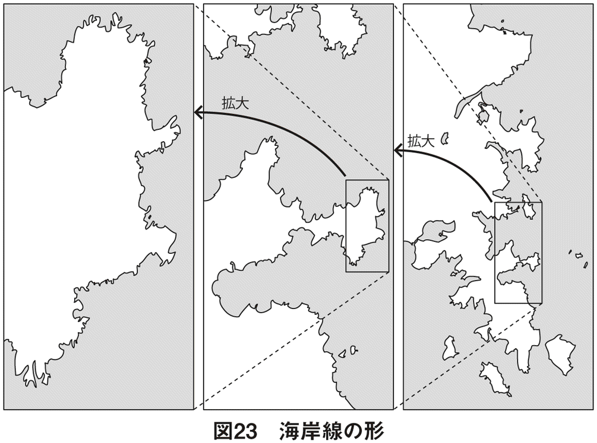

| 世界は「ゆらぎ」でできている～宇宙、素粒子、人体の本質～ | |
| 吉田 たかよし | |
| (2013) | |
はじめに
科学の本は、なんだか難しい。未知の暗黒物質・ダークマター、ニュートリノやヒッグス粒子のことなど、話題のトピックスについて本当はいろいろと知りたい。けれど、宇宙空間は広大すぎて、逆にミクロの世界は極小すぎて、常識の範囲ではイメージをつかみにくい。そんな印象をお持ちではないでしょうか。
しかし実はこういったものは、たったひとつ、物質の「揺らぎ」から始まっているということに尽きるのです。
ミクロの世界で、何が、どう揺らいでいるのか。その謎を解明するために、何百年も前から科学者たちは研究に励んできました。画期的な理論を導き、大発見を成し遂げたような、誰もが知っているノーベル賞の受賞者も、その中から数多く生まれたのです。
そして今日も、宇宙科学や物理学など、専門は分かれるものの、次なる科学の謎を明かすべく、さまざまな研究者たちが日々研究を重ねています。こうした最先端の研究を一気に発展させるブレイクスルーとしても、「揺らぎ」には熱い視線が注がれているのです。
「揺らぎ」というキーワードは、30年ほど前に一大ブームとなったことがありました。世代にもよりますが、１／ｆのゆらぎ、複雑系などということばを耳にされた方も多いでしょう。しかし、その本質的なところまで理解されている方はどれくらいいるでしょうか。また、当時は科学的な根拠が不透明だったせいで、信憑性がないような印象すら持たれているかもしれません。
私自身は、宇宙空間における物質の振る舞いを、量子論というミクロの揺らぎで解き明かす研究に携わっていました。揺らぎが織りなす壮大なロマンを実感できるテーマだったのですが、人体への興味もあり、その後、医学部に再入学しました。
医師になってから気づいたのですが、揺らぎは、宇宙やミクロの世界に限ったことではなく、人体のメカニズムにおいても重要な役割を果たしていたのです。しかも、量子論で学んだ揺らぎを分析する手法が、まったく畑違いの医学でも力を発揮するのです。揺らぎの持つ底知れぬ神秘に心を奪われた私は、迷わずこうした分野をテーマに選び、現在は東京理科大学で研究に取り組んでいます。
サイエンスということばは、ラテン語の「分離する」という動詞が語源です。扱う分野をどんどん細かく分離して専門性をつき進めることで学問が発展したため、こう呼ばれるようになったわけです。
しかしその弊害として、異分野同士の連携がうまくいかなくなり、全体像が見えにくくなってきたのも事実です。サイエンスとは専門家だけのもので、一般の人にとっては無関係だといった印象をお持ちかもしれません。その背景にも、行き過ぎた科学の分離が見え隠れしています。
そんな今だからこそ、揺らぎという共通の視点を通して、各分野を幅広く読み解くことがとりわけ重要になってきたと私は感じています。これは、いわばバラバラに分離されたサイエンスに太い横串を刺すようなものです。
第１章では、まず、ミクロの揺らぎを知る大前提となる量子力学とは何かをご説明いたします。第２章では、ニュートリノやヒッグス粒子の発見など、世間でも関心が高まっている素粒子の話をもとにして、今もっとも物理学者たちが注目している超ひも理論について述べます。
揺らぎや超ひも理論の知識は、宇宙を知る上でもとても重要です。そこで第３章では、揺らぎに焦点を当てながら、最先端の宇宙科学をひもといていきます。
ミクロの揺らぎや広大な宇宙での揺らぎについて本質をつかんでいただいたところで、本書の後半では、ぐっと視点を近づけ、地球上の自然現象や、私たち人間の身体の仕組みに備わっている揺らぎについて、知っていただきたいと思います。第４章では１／ｆの揺らぎ、第５章では、私たちの人体の機能に備わる揺らぎ、そして最後の章では、脳と心の揺らぎについてお話しします。
サイエンスは、難しいことを苦しみながら学ぶというものではありません。本来はワクワクドキドキしながら、楽しく物事の本質に迫っていくものです。その醍醐味を存分に味わっていただけるよう、心をこめて執筆したつもりです。本書を読み終えたとき、サイエンスの見方が、ほんの少しかもしれませんが、確実に変わっているはずだと信じています。
さあ、今から一緒に、サイエンスという大海原に向けて旅に出ましょう。揺らぎという確かな羅針盤が、私たちを心ときめく楽園へと誘ってくれるはずです。
世界は「ゆらぎ」でできている 目次
図版作成／株式会社ウエイド
すべての物質はミクロの揺らぎで成り立っている
ミクロの大きさを扱う量子力学が描き出す世界は、実に衝撃的なものです。この世にあるすべての物質は、常に揺らいでいることを示しているからです。今、手にとって読んでいただいているこの本も、あなたが腰掛けている椅子も、そしてあなた自身も、この世に存在するありとあらゆる物質は、ゆらゆらと揺らぎ続けているはずなのです。
もちろん、地震でも起きない限り、本も椅子も私たち自身も、揺らいでいるという実感はありません。それは、揺らぎがあまりにも小さいため、私たちが暮らす日常生活の世界では感じとることができないからです。
しかし、原子１個、電子１個といった極小の世界では、すべての物質が確実に揺らいでおり、この揺らぎが多くの物理現象を支配しています。これを解き明かしたのが、量子力学です。ミクロの世界で繰り広げられている現象は、この揺らぎを抜きにして語ることはできません。
といっても、ミクロの世界の揺らぎなんて、私たちの生活には関係ないと感じた方もいるでしょう。でも、それは間違いなのです。
私たち人間を含め、すべての生命の活動は、無数の化学反応によって成り立っています。身体の動きをつくり出す筋肉の収縮も、視覚や聴覚といった感覚も、悩んだり笑ったりするときの脳の働きも、突き詰めれば、すべて数多くの化学反応によってもたらされるものです。
ところが、こうした化学反応も、物理現象と同じように、実はミクロの世界における物質の揺らぎによって成り立っていることが明らかになっています。
たとえば、水素と酸素が反応すると水ができますね。これもミクロの世界に目を向けると、水素分子を構成する電子の揺らぎと酸素分子を構成する電子の揺らぎが、相互に影響を及ぼし合い、それぞれが混合することで起こります。また、水素分子自体の揺らぎと酸素分子自体の揺らぎも、お互いに混合します。もし、それぞれの揺らぎが混合しなかったとしたら、反応は起こりません。
このように、量子力学の理論によって化学反応の成り立ちを解き明かす学問を、量子化学といいます。
量子化学を応用すれば、理論的には、すべての化学反応をコンピューター上で再現できます。つまり、実験をしなくても、どのような反応が起こるのか予測できるわけです。このため、遠く離れた宇宙空間で起こっている化学反応についても、分析することができるのです。
地球はもちろん、宇宙空間も含め、すべての化学反応は、根本的にはミクロの揺らぎによって起こるものです。ですから、無数の化学反応によって活動している人間は、極論すれば、揺らぎによって生まれ、揺らぎによって育ち、揺らぎによって死んでいくというわけです。揺らぎは、あなたにとって無関係どころか、あなたの人生そのものが、実はミクロの揺らぎの集合体だと言えるのです。
量子力学とは、なんだか難しそうな学問に感じられた方も少なくないでしょう。確かに、数式を解くのは実に煩雑な作業です。ただし、エッセンスを直感的につかみとるだけなら、数式まで踏み込む必要はありません。そこで本章では、数式は一切使わず、ミクロの世界を解き明かしていきます。
その上で大切なのは、物質は究極的には揺らいでいるものなのだということを、理屈ではなく、感覚で理解することです。そうすれば、ものの見方がずいぶん変わるはずです。これを、本章のゴールとしましょう。
量子力学とは何か
量子とは、ふだんは耳にしないことばですが、「量の最小のかたまり」という意味です。
「子」には小さいという意味がありますが、実際、長さにも時間にも、ものすごく小さい物理量としての最小のかたまりがあります。日常生活では、長さも時間も連続した量のように感じますが、実は、長さには１・６１６×10のマイナス35乗メートル、時間には５・３９１×10のマイナス44乗秒という最小のかたまりがあり、それ以上は細かくなりません。このため、ミクロの世界では、長さも時間もエネルギー量も連続した値ではなく、飛び飛びの値をとります。これが、量子という考え方の本質です。
パチンコ玉をイメージすると理解しやすいでしょう。学生時代、物理学で学んだことをパチンコに応用し、大勝ちしていた強者の同級生がいました。彼が打つと、みるみるうちに箱がパチンコ玉でいっぱいになるのですが、そのくらいになるとパチンコ玉は数ではなく、連続した量であるかのような錯覚を起こします。「パチンコ玉は、４箱分！」、「パチンコ玉は、一箱の半分！」といった具合です。でも、箱の中に収まっているのは、実際は一個一個の玉です。１個のパチンコ玉は、決してそれ以上に細かくなることはありません。
このパチンコ玉と同じように、長さもエネルギーも、それ以上は細かくならない量としての最小のかたまりがあるのです。
ですから、ミクロの世界を理解するためには、長さやエネルギーをパチンコ玉に置き換えてイメージする習慣をつけるといいでしょう。
あなたの身長が１７０センチだったら、長さを表す小さなパチンコ玉が無数に集まって１７０センチという長さになっていると考える。駅まで歩いて10分なら、時間を表す小さなパチンコ玉が無数に集まって10分という時間の長さになっているとイメージする......。そうすれば、連続した値ではなく、飛び飛びの値をとるという原則が感覚的にもしっくり受け入れられるようになってくるはずです。
このように、極限状態で物理量が飛び飛びの値をとるということを前提に、物質に働く力や運動のしかたを解き明かすのが、量子力学です。
ミクロの世界の揺らぎを、私たちの日常生活に置き換えれば、海岸に押し寄せる波によく似ています。もちろん、電子や陽子や中性子といったミクロの世界を構成する粒子は、その呼び方に現れているように、粒としての性質もあります。ただし、それと同時に、波としての性質も持っているのです。
こうした現象を、「粒子と波動の二重性」と呼びます。
欧米に勝った長岡半太郎の原子モデル
ミクロの世界を構成する素粒子の中で、最もイメージしやすいのは電子でしょう。
あなたは、電子が原子の中で、どのような状態で存在していると考えていますか。きっと、原子核の周囲を電子が回っている様子を思い描いている方が多いでしょう。こうした原子のモデルは、実は日本人によって築き上げられたものだということをご存じでしょうか。
１９０１年、イギリスの物理学者トムソンは、原子はスイカのような形をしているという説を発表しました。スイカの果肉の部分にプラスの電荷がうっすらと広がっており、その中に、マイナスの電荷を持った電子の粒子がスイカの種のように存在しているというものです。これはスイカ型モデルと呼ばれ、有力な説として学会の中で強い支持を受けました。
これに対して真っ向から異議を唱えたのが、長岡半太郎という日本の物理学者です。彼は、プラスの電荷は原子の中心にある原子核に集中しており、電子はそのまわりを回っているのだと考え、１９０３年に発表しました。
当時の科学研究は圧倒的に欧米が中心で、極東の日本の研究者を見下すような雰囲気があったのですが、結果は長岡の勝利。日本の研究者の国際的な地位向上に、大いに貢献されました。
ちなみに長岡は、東京帝国大学の学生だったとき、「東洋人が、科学の分野で本当に西洋人に対抗できるのか？」という、当時誰もが抱いていた大きな疑問に結論を出すために、わざわざ大学を休学しました。そして、漢文で書かれた中国の書籍を収集し、片っ端から読破。その結果、微分やエネルギーといった科学における重要な概念も、合金や火薬といった主要な技術も、東洋で独自に創造されたことを突き止めました。これにより、東洋人であることに大いに自信を持つことができたのです。この自信があったからこそ、トムソンの説に反論する勇気を持てたとのちに語っています。
ちなみに、長岡の弟子の一人が、日本人で初めてノーベル賞を受賞した湯川秀樹です。そして、湯川がノーベル賞をとれたのも、長岡が彼を選考委員会に推薦したからだと言われています。
太平洋戦争の敗北でズタズタに引き裂かれた日本人のプライドを、科学研究の成果で取り戻したいという思いが、長岡から湯川にも引き継がれていたようです。国家や民族の誇りを、領土争いなどの狭小なナショナリズムに委ねるのではなく、科学研究という人類全体への貢献で競い合うというのは、社会のあり方として実に健全ですね。
原子の本当の姿に近づいたという点で、長岡の研究は素晴らしい業績だと言えます。ただし、提唱されてから１００年が経ち、原子が本当にこのような姿になっていると信じている研究者は、現在ではほぼ一人もいないでしょう。電子が原子核の外側に存在するということは正しいのですが、長岡の原子モデルには、決定的に抜け落ちていることがあります。それが、電子は揺らいでいるということなのです。
電子は「そこにある」という確率でしか表せない
では、現実には、電子はどのような形で存在しているのでしょうか。電子は、原子核のまわりに綿菓子のような形でぼんやりと広がっています。これは電子が存在する確率を表したもので、雲のように見えるため電子雲といいます。
あくまでも、１個の電子は１個の電子です。ただし、ある瞬間に「ここにある」というような確固たる存在ではなく、原子核のまわりにぼんやりと広がっていて、それぞれの場所に存在する確率しかわからないというものです。電子の存在する確率が高い場所を濃く表現し、確率が低い場所を薄く表現すると、図２のようになります。
こう説明すると、科学技術が未熟なために、電子の正確な位置が検出できないのだと思った方も多いでしょう。しかし、これは誤解です。電子の正確な位置は、今後、科学技術がどれだけ進歩しても厳密に確定することはできません。なぜなら、ミクロの世界では、すべての物質はもともと揺らぎを持って存在しているので、どこに位置しているのかは確率でしか表すことができないからです。
こう聞くと、ミクロの世界はずいぶんいい加減なものに思われるかもしれませんね。しかし、この確率は、方程式で厳密に表すことができるのです。それが、シュレディンガー方程式です。
あらゆる化学反応を表す方程式
この方程式は、量子論のすべての根本となるもので、「量子論の憲法」と呼ぶ研究者も少なくありません。日本国憲法は、民法や商法などありとあらゆる法律の上位にある最高法規ですね。これと同じように、シュレディンガー方程式は、ミクロの世界で繰り広げられる様々な物理現象や化学反応を支配しているわけです。
極論すれば、地球も含め、この宇宙で起こるすべての化学反応は、シュレディンガー方程式によって引き起こされていると言ってもよいでしょう。
でも、最初にお約束した通り、本書は方程式を使わず、揺らぎの本質を皮膚感覚で感じとっていただくことを目的にしています。これ以上、方程式は出てきませんので、ご安心ください。
では、言葉で表現すると、シュレディンガー方程式は、具体的にはいったい何を表しているものなのでしょうか。大胆にひと言で言えば、粒子が波のように揺らいでいる様子、あるいは、揺らぎが時間の経過によってどのように変化するかを表している式なのです。このため、シュレディンガー方程式を解けば、物質の揺らぎがどんな波の形になっているのか、その波が時間とともにどのように伝わっていくのかが正確にわかります。
水面に現れる波は、常に高くなったり低くなったりを繰り返しています。この上下の運動が、水面の揺らぎの正体です。一方、ミクロの世界の電子も、これとよく似た波としての性質をあわせ持っているのですが、こちらは揺らいでいるものの正体が根本的に異なります。
先ほど説明したように、現実の電子は、今、この位置に存在していると断言できるものではなく、存在する確率の分布が原子核のまわりに雲のように漂う電子雲の形をしているということがわかるだけです。その確率の分布が、波を表す波動関数で表されるのです。これが時間とともに変化していく法則を示すものが、シュレディンガー方程式の本質です。
粒子と波動の二重性
現在では、電子であっても陽子であっても中性子であっても、物質が小さければ、すべて「粒」と「波」の２つの性質を持っていることがわかっています。
電子も陽子も中性子も、粒子であることは、どなたもイメージできるでしょう。でも、波動でもあることに納得できる人は、ほぼいないはずです。「粒子でもあり波でもある」と言われても、にわかには受け入れられないでしょう。
実際、この「粒子と波動の二重性」については、大勢の著名な天才物理学者が２００年以上もかけて大論争を繰り広げてきました。その大変な苦労の末に、結論づけられたものです。だから、私たちがすぐには納得できないのは当然なのですが、物理学の歴史にとって、ものすごく重要な結論だということも見逃してはいけません。ここでは、できる限りわかりやすく説明していきましょう。
まずは、電子ではなく「光」を例にとってみましょう。
「光はいいから、早く電子の説明を読みたい」と思ったかもしれませんね。そのお気持ちはよくわかります。
21世紀に生きる私たちは、電波やＸ線を日常的に使っています。これらは、同じ電磁波の仲間なので、光の一種とも言えます。だから、光が「波」だと言われても、それほど意外には思いません。むしろ、光が「粒」だというほうが不思議に感じられるはずです。それに比べたら、電子が「波」だというほうがはるかに意外なので、こちらのほうが関心は高いでしょう。
にもかかわらず、光のほうから先に説明する理由は、それが物理学の王道だからです。２００年以上にもおよぶ世界的な大論争の結果、「粒子と波動の二重性」が最初に見つかったのは、光についてなのです。この結論をもとに、その後で、これが電子をはじめとする他の粒子にも見られる普遍的な法則であることがわかったからです。
古典物理学から相対性理論へ
まず、物理学の歴史を大まかに振り返ってみましょう。
万有引力に象徴されるように、物体に働く力や運動は数式で表すことができます。これが、17世紀に集大成されたニュートン力学です。一方、19世紀には、電気や磁気の振る舞いは、究極的にはたった４つの方程式で表されることをマクスウェルが示しました。この２つの学問を合わせて、現在では古典物理学と呼んでいます。ニュートン力学とマクスウェルの電磁気学によって、物理学はいったん、ほぼ完成したかのように考えられていました。
ところがその後、古典物理学ではどうしても説明がつかない物理現象が次々と見つかってきました。そのひとつが、光の速度が常に一定であるという観測結果です。
宇宙には、双子のようにペアで存在し、互いの重力でクルクル回りあっている恒星があります。これを二重星といいます。二重星は、地球に近づく時間帯と遠ざかる時間帯がありますが、もしニュートン力学が成り立つとしたら、近づくときはその速度の分だけ光が速くなり、遠ざかるときはその速度の分だけ光が遅くなるはずです。ところが観測結果は、光の速度が変化しないということを示すものでした。
この矛盾を説明することに成功したのが、アインシュタインの相対性理論です。
ニュートン力学では、空間は、ｘ軸、ｙ軸、ｚ軸の３つが直交した安定した箱のようなもので、そこに時間が一定のペースで淡々と流れていくということが前提となっていました。しかし、物質が光の速度に近い高速で移動したり、ブラックホールなどの影響により物質に巨大な重力がかかると、時間や空間はもはや絶対的な存在ではなく、速度や重力に応じて伸びたり縮んだりする相対的な存在だというのが相対性理論です。こうして古典物理学の一角は、速度や重力の極限状態で崩れ去りました。
しかし、相対性理論をもってしても、まだ解決できない矛盾が見つかりました。それが、ミクロという極限状態での物質の振る舞いなのです。
光は「波」か、それとも「粒」か
光の正体が何なのか、古くは17世紀末に、ニュートンとホイヘンスという２人の偉大な物理学者の間で大論争が繰り広げられました。ニュートンは「光は粒子である」と主張したのに対し、オランダの物理学者、ホイヘンスは「光は波だ」と主張したのです。
物体が光をさえぎると、はっきりとした影ができます。このことから、光が直進していることは明らかです。これが、光が粒子である証拠なのだと、ニュートンは考えました。もしも光が「波」なら、物体に当たったときに、その陰に回りこむ「回折」という現象を起こすはずなのです。しかし、当時の観測精度では、光に回折は認められませんでした。
一方、２つの光線同士をぶつけると、お互いに何の影響も及ぼさず、そのまま直進していきます。これは「波」に特徴的に現れる性質です。もし光が粒子だったら、空中でぶつかり合って反射しそうなものですが、２つの光線をぶつけてもそのような現象は観測されません。これを根拠に、ホイヘンスは光が「波」だと考えました。
当初は、ニュートンの主張のほうが優勢でした。なんといってもニュートンは、当時、すでに世界屈指の物理学者として、絶大なる尊敬を集めていました。だから、「ニュートンが言うのだから正しいのだろう」と考える人が多かったのです。また、当時の研究者たちは、内心で「大物のニュートンを支持しておいたほうが学会での立場を悪くしないだろう」といった計算も働かせていたようです。それに比べてホイヘンスは、土星の環を発見したり、振り子時計を発明するなど、すでに一流の業績は残していたものの、さすがにニュートンと比べると名前負けしていたわけです。
ところが、この２人の論争は、イギリスの物理学者、トーマス・ヤングの実験によって、ホイヘンスに逆転勝利がもたらされたのです。
ヤングは、図５のように、板に空けたスリットに光を２本通す実験を行いました。もし光が粒子なら、光の粒は直進して、スクリーンの２カ所だけに当たるはずです。ところが、実際には、明るいところと暗いところが交互に繰り返される縞模様が現れました。これは、光が波であり、２カ所のスリットを通った波が互いに干渉しあって縞模様をつくっているとしか考えられないのです。実際、水槽にスリットを設置して波を起こすと、同じような干渉の縞模様が現れます。このヤングの実験によって、ホイヘンスの波動説に軍配が上がり、光は「波」だということでいったんは決着がついたかに見えました。
ところが20世紀になると、再び状況が激変します。今度はアインシュタインが、光が粒子としての性質を持つことを証明したのです。
アインシュタインは、金属の板に光が当たると電子が飛び出してくる現象に着目しました。このことを、光電効果と呼びます。なんだか専門的な話のように感じるかもしれませんが、実はみなさんも、普段から光電効果のお世話になっているはずなのです。
携帯電話やスマートフォンに備わっているデジタルカメラ、あるいはビデオカメラには、ＣＣＤカメラが一般的に使われています。このＣＣＤカメラは、原理としては、光電効果を利用して光の映像を電気に変えることで撮影しているものです。
アインシュタインは、この光電効果についての実験結果をもとに、光が粒子であることをあざやかに示しました。
光は周波数が大きいほど、それに比例してエネルギーも大きくなります。そのため、周波数の高い光を当てるほど、電子は速いスピードで勢いよく飛び出してきます。一方、周波数の低い光はエネルギーも低いので、この場合は、電子が飛び出してくるスピードが遅くなります。
ただし、いくら低い周波数であっても、もし光が純粋な波だとすれば、強い光を当てた場合、それなりのスピードで電子は飛び出してくるはずです。波のエネルギーは、周波数だけでなく、波の強さによっても決まります。たとえ周波数が低くても、それを補うほど波が強ければ、波のエネルギーは大きくなります。だから、光電効果についても、周波数の低さを補うくらい強い光を金属板に当てれば、電子は飛び出てきそうなものです。
ところが、実際には、ある値以上に周波数が低くなると、どんなに強く光を当てても、金属板から電子が飛び出してくることはありません。このことから、アインシュタインは光がエネルギーの「粒」だと考えざるを得ないと結論づけたのです。
量子とは、前述したように、それ以上は分割できない物理量の最小のかたまりです。ミクロの世界では、長さやエネルギーは連続した量ではなく、飛び飛びの値しか取れないのでしたね。これが量子という言葉の意味ですが、光も連続した量ではなく、光量子という一粒一粒の光の粒が集まったものだとアインシュタインは考えたわけです。
アインシュタインは、こうした内容を１９０５年に論文として発表しました。これが光量子仮説と呼ばれるものです。
光量子仮説
天才のアインシュタインは、難なくこの結論に至ったのですが、凡人の私たちには少し難しいので、もう少し丁寧に説明しましょう。
光は、光量子という小さなかたまりが一粒一粒集まってできています。１粒の光のかたまりが持つエネルギーは、周波数だけで決まります。周波数が高いほど、光の粒は高いエネルギーを持っているのです。
でも、たくさんのかたまりが集まった光全体のエネルギーは、周波数だけで決まるわけではありません。周波数で決まる光１粒のエネルギーに、光の粒の数をかけた値が、光全体のエネルギー量になります。実は光の強さは、この光の粒の数が多いということを表しているのです。
光のエネルギー量＝光１粒のエネルギー×光の粒の数
１粒の光量子が、１粒の電子を飛び出させるのに十分なエネルギーを持っていたら、光電効果が起こります。しかし、１粒の光量子が十分なエネルギー持っていなければ、いくら光量子の数が多くても光電効果は起こりません。つまり、光量子２粒、あるいは３粒がまとまって１個の電子をたたき出すということは、できないのです。これが、低い周波数であれば、いくら強い光を当てても電子が飛び出してこない理由です。
図６は、１９１６年にアメリカの物理学者ロバート・ミリカンが行った、光電効果に関する実験の結果です。電子が金属の板から飛び出すには、電子を金属から引き離すために、一定のエネルギーが必要です。図を見ると、
光の１粒が持つエネルギー＝電子１個を金属から引き離すエネルギー＋飛び出してきた電子１個の運動エネルギー
という関係がみごとに表れています。これは、電子１個が粒子という「粒」であるように、光も「粒」だということを明確に示しているのです。
この実験結果をさらに発展させる形で、米国の物理学者アーサー・コンプトンは、厳密に光が粒であることを示す現象を発見しました（コンプトン効果）。これにより、光は光量子という「粒」からできていることが完全に証明されたのです。これ以降、アインシュタインの光量子仮説は仮説ではなくなり、誰もが受け入れる定説だと認められるようになったのです。
こうして、ニュートンとホイヘンスから始まった「光は粒子なのか波なのか」をめぐる論争は、２００年あまりの時を経て完全に決着がつきました。結論は、粒子でもあり波でもあったので、両者ひきわけだったわけです。天国ではニュートンとホイヘンスが握手を交わし、互いの健闘をたたえているかもしれません。
アインシュタインは相対性理論でノーベル賞を獲れなかった
実は、光量子仮説の発見のおかげで、かろうじて面子を保ててほっとしただろうと噂されていた人たちがいます。それは、当時のノーベル賞の選考委員たちです。
アインシュタインは20世紀で最も偉大な科学者だと言われているくらいですから、当然ノーベル賞を受賞しています。しかし、彼が受賞したのは、実は、この光量子仮説の業績に対してのものであり、それよりもはるかに有名な相対性理論で受賞したわけではなかったのです。
これには、どうにもならない事情がありました。相対性理論は、従来の物理学を根底から変えてしまうあまりにも革新的な理論だったので、頭のかたいノーベル賞の選考委員は、評価していいものかどうか自信が持てなかったのです。とはいえ、「相対性理論はすごい」と世間の評判は沸騰する一方で、ノーベル賞を出さないというのはとても不自然な状況でした。さらに、アインシュタインがユダヤ人だったため、そこに民族差別の問題が複雑にからみ、選考委員はすっかり追い詰められてしまっていたのです。
こうした窮地から脱するために、選考委員がとった苦肉の策が、光量子仮説に対してアインシュタインにノーベル賞を与えることだったと言われています。
キュリー夫人のように、ノーベル物理学賞の後にノーベル化学賞を受賞するということはありますが、制度上、ノーベル物理学賞を一度でも受賞したら、同じ物理学賞を再度、受賞することはありません。かくして選考委員は、相対性理論の評価という重責から逃げ出すことに成功したわけです。
ただし、相対性理論には及ばないというだけで、光量子仮説も十分にノーベル賞に値する素晴らしい業績であることは間違いありません。念のため。
電子も「光」と「波」の性質を持つ
光が粒子と波動の二重性を持つことを理解していただいたところで、いよいよ電子に踏み込んでいきましょう。
フランスの物理学者、ド・ブロイは、波だと考えられていた光に粒子の性質があったということに衝撃を受け、それならば逆に、粒子とされている電子などの物質にも波の性質があるのではないかと考えました。これが物質波、あるいはド・ブロイ波と呼ばれるものです。
ド・ブロイは、電子が原子核のまわりを回るとき、図７のような波の状態になっていると考えました。さらに着目したのは、このときの波長です。電子が原子核を１周するときの長さが、ぴったり波長の整数倍になると考えたのです。
そうすると、図のように、波が山となる部分は電子が何周しても山であり、波が谷となる部分は電子が何周しても谷になります。もし、原子核を１周するときの長さが波長の整数倍にならないとしたら、山となる波と谷となる波が打ち消し合って消えてしまいます。
実際、ギターの弦を弾いて音を出すと、弦の長さが音の波長の整数倍になっています。これと同じことが電子の軌道でも起きていると、ド・ブロイは考えました。
ド・ブロイのこの主張は、あまりにも奇想天外だと受け止められたため、当初は物理学界でも相手にされませんでした。ところが、この頃すでに学界のスーパースターに上りつめていたアインシュタインが、ド・ブロイの説を高く評価し、自身の論文に引用したことがきっかけで、一気に脚光を浴びることとなりました。
その後、金属の結晶に電子線を当てる実験が行われ、ド・ブロイ波が本当に存在している証拠が見つかります。こうして、誰もがド・ブロイの主張を認めざるをえなくなったのです。
かくして光だけでなく、電子も、粒子と波動の二重性を持つことが明らかになりました。のちに、陽子や中性子といった他の粒子も、波としての性質を持つことが実験で証明され、現在ではすべての物質に当てはまる普遍的な性質だとされています。
一方、オーストリアの理論物理学者のシュレディンガーは、アインシュタインの論文を通してド・ブロイの業績を知り、興味を持った彼は定式化に取り組みました。こうして、物質波の伝わり方を示す方程式を完成させ、１９２６年に発表したのです。これが、先ほどご紹介したシュレディンガー方程式です。
これにより、量子力学は一定の完成を見ました。ミクロの世界の様々な現象を、たったひとつのシュレディンガー方程式で、完璧とも言えるほど見事に描き出すことができたのです。
物質が存在する「確率」が揺れている
物理学の研究では、ふつうは方程式が完成したら「めでたし、めでたし」となります。しかし、量子力学の場合はそうはいきませんでした。実は、大変な問題が積み残しにされ、21世紀の今日でさえ、まだモヤモヤしたものが残ってしまっているのです。
電子は粒子であると同時に、波として揺らいでいるということがわかったのですが、何がどのように揺らいで波になっているのか、その正体がわからなかったのです。これを明らかにしなければ、本当の意味で解明したことにはなりません。
水面に現れる波も、ギターの弦が奏でる音も、地震の震動も、すべて波ですが、その物理現象としての具体的な中身はずいぶん異なります。
波とは、何かが揺らぐという物理現象です。水面の波は、水が上下に揺らぐことで発生します。ギターでは、垂直方向に弦が揺らぎ、これにより空気の密度が弦の進行方向に揺らぐことで音が伝わっていきます。地震の振動は、地面が上下や左右に揺らぐというものです。
では、物質がミクロの世界で波になっているというのは、具体的には何が揺らいでいるのでしょうか。実はこれがとてつもない難問で、方程式を完成させたシュレディンガー自身でさえ、よくわかりませんでした。つまり、どう揺らぐのか方程式で表すことはできても、何が揺らいでいるのかはわからなかったのです。
これに対するひとつの答えを見出したのは、ドイツ生まれの理論物理学者、マックス・ボルンです。彼は、「物質がその場所に存在する確率」が揺らいでいるのだと考えたのです。
波の動きを表す方程式を波動方程式といいますが、水面に漂う波を波動方程式で表した場合、方程式を解いて得られる関数は水面の高さを示しています。実際、波動方程式を解いて関数の大きさを図にすると、水面が高くなったり低くなったりする、見慣れた波の形になります。
一方、物質波の場合はシュレディンガー方程式が波動方程式そのものなのですが、これを解いて得られる関数の大きさが「粒子の存在する確率」を表すと考えると、見事に説明がつくのです（厳密に言うと、波動関数の絶対値の自乗が存在確率に比例するということ）。原子核からの距離を横軸にとり、縦軸に波動関数（正確に言うと波動関数の絶対値の自乗）をとると、図８のようになります。
電子がＡの位置にある確率は低く、Ｂの位置にある確率は高く、Ｃの位置にある確率は低いことを表しています。こうした数値は、観測結果とみごとに一致しました。
前述したように、電子は「ある瞬間」に「ここに存在する」と、あらかじめ限定することはできず、原子核のまわりに雲のような形で存在する確率が広がっています。図８は、電子の存在確率を表す電子雲の濃さを示すものです。
このように、電子が存在する確率は波の式で表すことができ、シュレディンガー方程式はそれが時間の経過によって変化する法則を示していたと考えると、観測結果にぴったり一致します。つまり、物質波とは、「存在する確率」の揺れと考えられるわけです。現在では、この解釈を支持する研究者が大勢を占めています。
神はサイコロを振らないのか？
では、物質が存在する位置は、どうして確率でしか表せないのでしょうか。これこそが、量子力学を理解する上で、最大の難所となるポイントです。
実際、アインシュタインでさえ、「神はサイコロを振らない」という名言を残し、確率で物事が決まるということを最後まで受け入れようとしませんでした。物理現象が確率でしか描けないなんて、神様がサイコロを振るようなもので、そんなことはありえないという主張です。
アインシュタインが抱いた疑問は、もっともなものです。特に矛盾を感じるのが、観測するまでは粒子がどこにあるのか確率でしかわからないのに、観測した瞬間に位置が確定するということです。
たとえば、原子核のまわりを回る電子は、観測前は存在の確率を表す電子雲の状態だったところが、観測した瞬間には電子の位置が１カ所に固定されます。つまり、ミクロの揺らぎは、観測によって一瞬にして消え去るというわけです。
こうした揺らぎのとらえ方は、デンマークのコペンハーゲンにあるボーア研究所から世界に向けて提唱されたので、コペンハーゲン解釈と呼ばれ、現在では標準的な理論となっています。しかし、ふつうに考えれば、かなり無理のある解釈で、物理学者のみんながみんな、これでスッキリ腑に落ちたということにはなりませんでした。
シュレディンガーの猫
特に批判が集中したのは、物理現象の解釈に観測者の人間を持ち込んだ点です。ミクロの揺らぎが人間の観測によって消えるということは、物理現象は誰が観察しても同じ結果となるという、自然科学の大前提である客観性を脅かすものです。
アインシュタインは月を指差し、「私が見るまでは、月はあそこになかったのか」と語り、コペンハーゲン解釈の矛盾を指摘しました。ごくごくわずかではありますが、月も、観測前は揺らいでいるはずです。ですが、コペンハーゲン解釈では、目で見るという行為で38万キロメートルも離れた月の揺らぎが一瞬で消え去ることになります。やっぱり何かおかしいと感じるのが、ふつうの感覚です。
シュレディンガー本人でさえ、コペンハーゲン解釈に痛烈な批判をしています。彼は、「シュレディンガーの猫」と呼ばれる思考実験（実際に行うのではなく、頭の中で考える空想の実験）を例にとって、コペンハーゲン解釈が矛盾に満ちた理論だと批判しました。
箱の中に、猫と、確率２分の１で放射線が飛び出し、それを感知すると毒薬が出る装置を入れてフタをしたとします。放射線が飛び出すかどうかはミクロの揺らぎによるので、コペンハーゲン解釈が正しいとすれば、フタを開けて観察を行った瞬間に確定するはずです。逆に言えば、フタを開けるまでは、放射線が飛び出さず猫が生きている状態と、放射線が飛び出して猫が死んでいる状態が、混ざり合って揺らいでいるということになります。やっぱりこれも、どう考えてもおかしいですね。
アインシュタインもシュレディンガーも、量子力学の構築に多大なる貢献をしてノーベル賞を受賞しました。にもかかわらず、その根本となる揺らぎの解釈は最後まで受け入れようとしませんでした。その歴史的事実は、なんともドラマチックに感じられます。
ただし、コペンハーゲン解釈の矛盾を指摘することはできたのですが、アインシュタインもシュレディンガーも、それに代わる説得力のある解釈を築き上げることはできませんでした。アインシュタインは人生の終末まで悩み抜き、シュレディンガーにいたっては途中で量子論がすっかり嫌いになり、晩年は「こんな研究なんてしなければよかった」と語っていたそうです。
ちなみに、現在では、コペンハーゲン解釈を支持する研究者が大多数です。一部で「多世界解釈」という新たな説を支持する人もいますが、これはシュレディンガーの猫の思考実験でいえば、猫が生きている世界と死んだ世界が枝分かれしていくといった奇想天外なもので、とてもじゃないですが標準的な理論になるとは思えません。
一流の研究者でもこのような状況なので、大学の授業でコペンハーゲン解釈を教わると、かつての私も含め、学生たちはみんな悩みます。たまに悩みすぎて夜に眠れなくなるというのが、研究室の飲み会のときに盛り上がるお決まりのエピソードでした。
みんなが悩みすぎてしまうので、京都大学の福井謙一教授とともに量子化学の研究でノーベル化学賞を受賞した、コーネル大学のロアルド・ホフマン教授は、弟子の研究員や大学院生に対し、「40歳になるまでは、量子論の解釈を考えるのは禁止だ」と語っていたそうです。
アインシュタインやシュレディンガーといった天賦の才に恵まれる物理学者がさんざん悩み抜いてもわからなかったことを、化学への応用を扱う量子化学の研究者が頭の中だけで考えても結論が出るはずはなく、貴重な時間が無駄になるだけだと考えたようです。そんな時間があれば、せっせと手を動かして数式を解き、化学反応の本質に迫る努力をしたほうが生産的だということです。実際、ホフマン教授は、軌道対称性保存則という理論を確立しノーベル賞に輝きました。
ホフマン教授がこのようなことを語った背景には、揺らぎの本質を考えることが、ついつい病みつきになってしまうほど魅惑に満ちたものであるという事情があります。実際、揺らぎの解釈が持つ魅力の深みにはまって抜けられなくなってしまった若手研究者が、世界中に数多くいるのです。だから、よほど自信がない限り、この分野を研究の専門とするのはおすすめできません。
ただし、本書を片手に、いっときミクロの揺らぎに思いを馳せるのは、大いにおすすめです。きっと、ものの見方が広がるはずです。
コラム 野球で考えるミクロの世界
ミクロの世界の揺らぎについて、そのイメージをしっかりつかみとっていただきたいと思います。そのために、現実にはありえないのですが、私たちが原子の大きさになり野球をしたらどうなるか、考えてみましょう。
このサイズになると、ボールは確固たるひとつのかたまりとしてではなく、電子雲と同じように、存在確率が広がった状態で揺らぎながら飛んできます。だから、どんなに優秀なバッターであっても、確実にバットに当てることはできません。もっとも、ボールの存在確率が高い場所でバットを振ったとしても、必ずしもボールに当たるとは限りません。なぜなら、そこにボールが存在する確率は１００パーセントではないからです。運が良ければバットはボールに当たりますが、運が悪ければ当たりません。
バットがボールに当たる確率は、シュレディンガー方程式により正確に求めることができるので、何度も何度も打席に立てば、最終的に打率がどうなるのかは、最初から厳密に予測できます。ただし、次にバットを振って当たるかどうかは、確率以上のことはわからず、実際にどうなるのかは、神様がサイコロを振るように、やってみなければわかりません。
では、私たちが暮らす現実の世界では、どうしてこのようなことは起こっていないのでしょうか。実は、厳密に言うと、野球のボールは、ミクロの世界と同じように私たちが暮らす世界でも揺らぎながら飛んできているのです。でも、本物のボールの場合は、揺らぎの大きさが猛烈に猛烈に猛烈に小さいので、私たちが揺らぎを感じとることはできないわけです。
猛烈という言葉を３回も繰り返したのには理由があります。原子１個というミクロの世界で見られる電子の揺らぎより、もっともっと小さいからです。
ド・ブロイは、物質波の波長が、運動量に反比例することを明らかにしました。運動量は、質量に速度をかけたものです。つまり、質量が大きくなればなるほど、物質波の波長は小さくなるのです。
電子の質量はものすごく小さく、わずか９・１×10のマイナス31乗キログラムです。このくらい質量が小さくて、物質波の波長は、やっと原子くらいの大きさになるわけです。ピッチャーが投げるボールの速度は電子よりはるかに遅いとはいえ、野球ボールの質量は０・１５キログラムですので、電子の１・６×10の29乗乗倍に相当します。その分だけ、原子のサイズの揺らぎより、さらに小さくなるわけです。
野球のボールを時速１００キロメートルで投げた場合、物質波としての波長を試しに計算してみたら、なんと７・３×10のマイナス33乗メートルになりました。原子の半径は０・１ナノメートルから０・３ナノメートル（０・１×10のマイナス９乗メートルから０・３×10のマイナス９乗メートル）ですので、これは原子のサイズをはるかに突き抜けたものすごく小さな値なのです。だから、ピッチャーが投げたボールが持つ物質波としての揺らぎは、人間の目で見てわからないだけでなく、今後どれだけ科学技術が進歩しようが、いかなる装置でもおそらく検出できないはずです。
私たちが日常的に実感するサイズに比べ、原子のサイズが小さいから、それに比例して物質波の揺らぎが小さく感じるのだろうと言う研究者もいます。しかし、これは誤解です。人間が暮らすサイズを１メートルの世界とすれば、原子はその10のマイナス10乗くらいの世界です。これでも、すごく小さいと感じますが、野球のボールの例で示したように、日常生活で触ったりつかんだりする物体の物質波としての波長は、原子の小ささをはるかに越える10のマイナス33乗という突き抜けたスケールの小ささです。だから、理論的には揺らいではいても、日常生活のレベルでは意味を持つ揺らぎではありません。
このように私たちは、物質波の揺らぎとはまったく無縁の大きさの世界に暮らしています。だから、量子の揺らぎが心の底からは納得できないとしても、それは仕方ありません。
でも、私たちの身の回りにある物体でさえわずかながら揺らいでいるということは、否定しようのない事実です。
ですから、この世界が揺らぎに満ちあふれているものだということを、心の片隅に留めておいてほしいのです。それだけでも、世界の本質にほんの少し近づけると私は考えています。
ミクロの「ひも」が揺らいで素粒子になる
第１章では、原子１個といったミクロの世界において、ありとあらゆる物質は必ず揺らぎを持っており、この揺らぎが多くの物理現象や化学反応の本質を担っているということを説明しました。しかし、最新の物理学の研究によって、物質のもっと根源的な部分にも揺らぎが深くかかわっている可能性が高まってきたのです。
物質を構成する究極の最小単位を素粒子といいます。この素粒子が、実はミクロのひもであり、ひもの揺らぎ方がそれぞれ異なるために、別々の種類の素粒子として振る舞うというのです。つまり、すべての物質の根源は、ひもの揺らぎにあるというわけです。
これは「超ひも理論」と呼ばれ、極小の世界から宇宙の成り立ちまでを解き明かす物理学の最終理論になりうると、今、世界中の物理学者から熱い視線が注がれています。
すべての物質が究極的にはひもの揺らぎだというのは、実に奇想天外であり刺激的です。素粒子は、文字どおり、すべての物質の素となる粒子です。このことばに表れているように、大前提として、物質の根源は丸い小さな粒子のようなものに違いないという思い込みがあったはずです。しかし、こうした常識はもろくも瓦解し、揺れているひもだというのですから驚きです。
初めて超ひも理論の存在を知ったときには、私は全身に電気が走るような衝撃を受けました。ミクロのひもが揺らいでいる様子を想像しただけでワクワクした若き日のことを、今でもはっきりと覚えています。
ただし、第１章で取り上げた量子力学の揺らぎと同じような話ではないかと感じた方もいらっしゃるかもしれません。しかし、「ひもが揺らいで素粒子になる」というのは、第１章で扱った量子論の揺らぎとはまったく次元の違う、異質なものです。
詳しく説明したとおり、現在、主流となっているコペンハーゲン解釈が正しいとすれば、電子などの小さな物質は、人間が観測するまでは存在確率が「波」として揺らいでおり、観測した瞬間に確固たる「粒子」としてとらえられます。この解釈には異論もあるのですが、ミクロの世界で物質が波と粒子の両方の性質をあわせ持つということについては、反対意見はありませんでした。
整理すると、すべての物質は「波と粒子の二重性」を持ち、そのうち、波としての性質をどうとらえるかについては、コペンハーゲン解釈が有力であるものの、疑問の余地は残っています。しかし、もう一方の粒子としての性質については、少なくとも量子論の中では目立った論争はなく、粒子は粒子だということで、その解釈の是非が問われることはなかったのです。
ところが、超ひも理論によれば、さらに小さな素粒子の世界まで踏み込むと、粒子としての性質についても、ひもの揺らぎで成り立っているというのです。さらに驚くのは、一部を除き、大半の素粒子はひもの揺らぎ方が違うだけで、ひもそのものが違うわけではないということです。
たとえば、電子も光子も、それ以上に分割することはできないので、素粒子に含まれます。超ひも理論によれば、同じひもであっても、電子の揺らぎ方をすれば電子になり、光子の揺らぎ方をすれば光子になるのです。
電子は、電気の流れの正体です。一方、光子は光の正体です。電気も光も身近なだけに、まったく違うものだというのは、どなたも実感できることでしょう。そんな電子と光子が、実は同じひもが異なる揺らぎ方をしているだけだというのです。
電子や光子だけではありません。アップクオーク、ダウンクオーク、ニュートリノ、電子ニュートリノ、ミュー粒子、タウ粒子、それに去年、ついに事実上発見されたヒッグス粒子......。これらも、それ以上は分割することができないので、すべて素粒子です。ただし、それぞれ性質はまったく異なり、素粒子として同列に扱うことがはばかられるほどバラエティに富んでいます。
そんな数多くの素粒子が、ことごとく同じひもであり、揺らぎ方が違うだけということになるのです。これは、途方もなく革新的な理論でした。
小さな小さな素粒子の世界
超ひも理論が途方もないものだというのは、扱う大きさについても言えます。ひと口にミクロの世界といっても、超ひも理論が描く揺らぎは、その小ささが桁違いなのです。
第１章で見た世界は、原子１個の大きさというスケールでした。これは、およそ１００億分の１メートルです。このくらいの大きさになると、量子論による揺らぎが、物理現象や化学反応に大きな影響を及ぼします。
これに対し素粒子は、10のマイナス35乗メートルといった極小の世界です。私たちの感覚では、原子１個の世界も素粒子の世界も、どちらもとても小さいということに変わりはないのですが、実際にはその程度がまったく違います。
小ささの差がイメージしやすいように、人間の身長を思いきって銀河系の大きさまで拡大したとしましょう。そうすると、原子１個の大きさは地球と太陽の距離くらいになります。
ところが、それだけ大胆に拡大しても、素粒子のひもの長さは、やっと原子１個くらいの大きさにしかなりません。揺らいでいる素粒子のひもがいかに桁外れに小さいものなのか、わかっていただけたでしょうか。
「ひも理論」と「超ひも理論」
超ひも理論のさきがけとなったひも理論は、ノーベル物理学賞を受賞された南部陽一郎博士らが、１９７０年に発表したものでした。ハドロンと呼ばれる陽子や中性子や中間子といった粒子がひもだと考えることで、その性質を説明しようと試みたのです。しかしその後、量子色力学という新しい物理学がハドロンの性質をみごとに解き明かしてしまったため、ひも理論は色あせ、衰退してしまいました。
しかし１９８４年になり、今度はハドロンよりももっと小さな素粒子がひもだとする、超ひも理論が発表されました。すると、それまでの理論ではまったく扱えなかった、素粒子の間に働く重力を説明することができ、一躍、世界中でブームになったのです。
超ひも理論は、ものすごく大雑把に言うと、量子論と相対性理論を組み合わせることで素粒子の性質の解明に挑む学問です。
前述したように、古典物理学は、日常生活のレベルでは物理現象を説明するのに完璧だと思われていました。しかし、ミクロの世界や強力な重力が働く世界で起こる現象については、説明できませんでした。このポッカリと空いた穴を埋め合わせることに成功したのが、量子論と相対性理論なのです。
どちらも画期的な理論なのですが、さらに両方を組み合わせた統一的な理論を構築しようと、多くの研究者が挑みました。しかし、未だ完成版と言えるものは登場していません。その中で超ひも理論は、成功への最有力候補だと言っていいでしょう。
元素は究極の粒子ではなかった
この世に存在するありとあらゆる物質は、究極的には何からできているのでしょうか？ これは、人間の知的好奇心から生み出される自然な疑問です。実際、古代ギリシアの時代から、多くの哲学者や科学者が、この難題に取り組んできました。
18世紀になると、この問いに対して、ひとつの答えに至りました。それが、物質を構成する究極の基本粒子は元素だというものでした。
すべての元になる素だと考えられたから、この名前になりました。英語ではelementといい、やはり、すべての素だという意味です。しかし、元素がたくさん見つかってくると、これが究極の粒子だということに疑いの目が向けられました。
科学、とりわけ物理学は、シンプルな理論であるほど正しいという暗黙の前提の上に成り立っている学問です。質量とエネルギーとの関係をE=mc2で表したアインシュタインによる特殊相対性理論の方程式は、この典型だと言えます。
元素についても、発見された数が30個を超えたあたりから、「こんなにたくさん見つかるようなら、元素は究極の粒子とは言えないんじゃないか」といった見解が科学者の間で広がってきました。ちなみに現在では、自然界に安定して存在する元素だけでも１００個弱が見つかっています。
そこで、さらに小さな究極の粒子が探索されたところ、予想どおり、元素を形成する陽子や中性子が見つかりました。ところが今度は、こうした粒子がたくさん見つかったため、やっぱり陽子も中性子も究極の粒子とは言えないということになりました。そして見つかったのが、さらに小さなクオークです。
高まるクオーク熱
クオークは、当初は３つだけだと思われていました。アップクオーク、ダウンクオーク、ストレンジクオークの３つです。
実は、クオークという名前からして、３つだけだということを前提にしてつけられたものです。ジェイムズ・ジョイスの小説『フィネガンズ・ウェイク』の中で、奇妙な鳥が「クオーク、クオーク、クオーク」と３回鳴いたという記述があり、３つという個数とつながりがあるということで、米国の物理学者、マレー・ゲル＝マンによってクオークという名前になったのです。
原子核を構成する陽子は、アップクオーク・アップクオーク・ダウンクオークの３つの組み合わせで成り立っています。また、陽子とともに原子核を構成している中性子は、アップクオーク・ダウンクオーク・ダウンクオークという３つの組み合わせです。「３」に着目してネーミングが決められたことは、現在でも意味はあるのですが、クオークの種類は３つでは収まりませんでした。その後、新たに３つのクオークが見つかり、６つに増えた上、他の粒子も加わったのです。現在、標準模型と呼ばれて広く認められている理論によれば、素粒子は17個とされています。
ヒッグス粒子は標準模型の最後のピース
標準模型ということばは少しかたくて、違和感があるかもしれませんね。英語だとstandard modelです。日本語でもそのままスタンダード・モデルと言ったほうがわかりやすいと思うのですが、日本の素粒子物理学では、これを直訳した「標準模型」という用語が一般的に使われています。
２０１２年７月31日、スイスのジュネーブ近郊にあるＣＥＲＮ（ヨーロッパ合同原子核研究機構）の大型ハドロン衝突型加速器（ＬＨＣ）を使った衝突実験で、ヒッグス粒子が事実上見つかったと発表され、このニュースは世界を駆けめぐりました。素粒子の実験には大掛かりな実験装置が必要で、多額の費用がかかります。このため、ヨーロッパの各国が資金を出し合い、共同で設立したのがＣＥＲＮです。ここには素粒子や原子核の性質を調べるための大型装置が数多く備えられていますが、中でも最大なのがＬＨＣと呼ばれるリング上の装置で、山手線一周に匹敵するほどの大きさです。これだけの大掛かりな装置だったからこそ、これまで見つからなかったヒッグス粒子の痕跡がとらえられたわけです。
ヒッグス粒子は、標準模型の17個の素粒子のうち、未発見だった最後の１個でした。だからこそ、大きく報道されたのです。
発表の翌日、私はラジオのニュース番組で解説を依頼されました。テレビでもラジオでも、この日の報道番組はヒッグス粒子の話題で一色でした。アナウンサーの方は、これほど大騒ぎになっているので、きっと予想外の発見なのだろうと思われたようで、「ヒッグス粒子の発見は驚きでしたか」と質問されました。しかし、発表されたデータは、まったく事前の予想どおりのもので、驚きはまったくありません。むしろ予想どおりの形でヒッグス粒子の痕跡が見つかったことこそが、このニュースの本質でした。そこで私は、こんな説明をしました。
「世界中の物理学者が、標準模型というジグソーパズルの完成に取り組んできたのですが、17個のピースのうち、たったひとつ、ヒッグス粒子だけがポッカリ空いていたんです。それが今回、寸分たがわずピッタリとはまるピースが見つかり、ついに物質の根源を描くジグソーパズルが完成したため、価値ある発見だと言えるのです」
このように標準模型の理論は、ヒッグス粒子の発見によって、一定のゴールに達したと言えます。
素粒子は双子のようにペアで存在する？
それでも、矛盾がすべて解決したわけではありません。標準模型の理論に従って計算すると、宇宙の誕生直後の高温下では、ヒッグス粒子は今回の観測結果の10京倍という途方もなく大きな質量を持つことになってしまいます。これは、どう考えてもおかしいことです。さらに、宇宙の物質の大半を占めるとされるダークマター（暗黒物質）の存在も、うまく説明できません。ダークマターについては、次の章で詳しく述べることにします。
そこで、既知の17個の素粒子には、双子のようなパートナーとなる超対称性粒子が存在するという理論が提起されました。これに従って、宇宙の誕生直後におけるヒッグス粒子の質量を計算し直すと、現在の10倍から１００倍程度になるのですが、これは物理学者がいかにもありそうだと考える都合の良い値なのです。
さらに、超対称性粒子がダークマターだと考えると、「質量が大きいのに見えない」という性質がうまく説明できます。このため、理論的には十分にあり得ると多くの専門家から支持され、超対称性粒子の存在を裏付ける具体的なデータを得ようと、実験を専門とする物理学者が、現在、実験を繰り返しています。
２０１３年４月には、国際宇宙ステーションで観測した陽電子がダークマターの痕跡かもしれないと、大きく報じられました。実は、観測データが超対称性粒子の理論に当てはまったからこそ、ダークマターの可能性が浮上したのです。これについても、第３章で詳しく述べましょう。
もし超対称性粒子が存在するとしたら、素粒子の数は合計で34個になってしまいます。さらにこれに、未発見ですが、２つの素粒子を加えるという考えもあります。ひとつは、重力によって引き合うという相互作用を生み出すグラヴィトン（重力子）で、もうひとつは、その超対称性パートナーであるグラヴィティーノです。この２つを加えると、物理現象を説明するには、少なくとも36個の素粒子が必要となります。
これは、究極の粒子と呼ぶにはあまりにも多すぎる数です。シンプルであるほど正しいという前提に基づいて研究を重ねている物理学者にとっては、これで完璧だというわけにはいきません。
このように、素粒子は数が多くて究極の存在と呼ぶには複雑すぎるという印象は否めません。こうした、物理学者なら誰もが抱えるモヤモヤしたわだかまりを一掃してくれるのが超ひも理論です。
超ひも理論は、それぞれの素粒子が極小の世界のひもから成り立っており、そのひもの揺らぎ方が異なるため、異なる粒子として振る舞うというものでしたね。しかも、素粒子ごとに異なったひもがあるというわけではありません。
重力相互作用を生みだす素粒子・グラヴィトンだけは輪になったひもですが、残りの素粒子はすべて１種類の、両端のあるひもでできており、それぞれの揺らぎ方が異なることで、別々の素粒子として振る舞うとされています。これは、シンプルこそ真実の証だと考える物理学者にとって、たいへん魅力的な理論です。
同じひもが、なぜ違う素粒子になるのか
ギターの弦をイメージするとわかりやすいでしょう。図12のように、同じ弦であっても、振動の仕方によって音の高さが異なります。たとえば、図12のＡがドの音を奏でているとすると、Ｂは１オクターブ上のドの音を奏で、Ｃはさらにその１オクターブ上のドの音を奏でています。つまり、まったく同じ弦であっても、揺らぎ方によって違う音になるということです。
素粒子を構成しているミクロのひもも、これと同じです。同じひもであっても、揺らぎ方が異なるので、別々の異なる素粒子として観測されるというわけです。
Ａ、Ｂ、Ｃは、音だけ聞くと、弦そのものが異なっているように感じる人もいるでしょう。実際、性質が違うわけですから、「Ａ、Ｂ、Ｃは異なる３つの素粒子だ」と表現しても、ある意味、間違いではありません。
でも、「ひとつだけれど、３種類の揺らぎ方をしている」という表現と比較したらどうでしょうか。どちらも正しいのですが、後者のほうが、よりシンプルに説明できています。素粒子についても、それぞれ別々の素粒子だといっても間違いではないのですが、揺らぎ方が違うだけだとしたほうが、より本質に迫っていると言えるのです。
ギターの弦を引き合いに出して説明しましたが、超ひも理論は、英語ではsuperstring theoryといいます。stringはひもとも訳せますが、弦とも訳せます。このため、日本語でも超弦理論と呼ばれることもあります。
ひもは揺らぎを与える仮想的な材料
この学説が正しいとしたら、そもそも、物質の存在自体も、その本質は揺らぎにあると言えます。「いやいや、究極的な存在はひもそのものであって、揺らぎではない」と感じた方もいるでしょう。おそらくそう感じた方は、ここでいうひもが、私たちが日常生活で触れている本物のひものように、何か材質を持ったものだとイメージしているはずです。
しかし、これは誤解です。もし、ミクロのひもが何らかの材質でできていれば、その材質を構成している物質が究極の素粒子だということになります。つまり、ミクロのひもは素粒子ではないことになってしまいます。
素粒子を構成しているミクロのひもは、そもそも太さはないので、構成している材質もありません。ただ長さのみを持っていて、それが揺らいでいるだけです。この長さを持つということが、超ひも理論の真髄の部分です。
それまで、この世の物質は、究極的には粒子という点みたいなものでできているはずだと思い込まれていました。しかし、究極の粒子が点だとすると、後ほど述べますが、重力を統一的に理論に組み込めないなど、どうしても説明がつかないことがいくつか見つかったのです。ところが、点ではなくて、長さを持つ「線」が振動していると仮定すると、説明が可能になるのです。
もちろん、長さがあるといっても、ミクロのひもの長さはものすごく短いものです。現在、「ひもの長さは、プランクの長さだ」と主張する研究者と、そうではないと主張する研究者とが論争を繰り広げています。プランクの長さとは、長さの最小単位です。
私たちの日常の世界では、長さは連続したもので、いくらでも小さく分割できるような印象があります。しかし前述したように、どんどん分割していくと、これ以上はもう分割できないという長さの最小単位にたどりつきます。それが、プランクの長さで、１・６１６×10のマイナス35乗メートルです。素粒子のひもはプランクの長さではないと主張する学説も、概ね、これに類似した極小の長さを想定しています。
ただし、注意していただきたいのですが、ひもが太さを持っていないというのは、長さに比べてさらに細いという意味ではありません。太さはゼロ、つまり、太さそのものがまったくないということです。
超ひも理論で重要なのは、素粒子の本質はひもそのものにあるのではなく、その揺らぎにあるということです。長さを持っていなければ揺らぐことができませんが、太さは揺らぎとは直接には関係がありません。ひもは、揺らぎを与えるための仮想的な材料にすぎず、本当はひもさえなくて、存在しているのは揺らぎだけだと言ってもいいくらいです。
ただ、揺らいでいるものは、点でもなければ面でもなく、短いながらも間違いなく線状のものです。点は０次元、面は２次元ですが、素粒子はどちらでもなく、１次元の線状のものが揺らいでいるのです。これをしっかり認識するためには、揺らいでいるのはひもだと考えることが有効です。
「力」はこの世に４種類ある
超ひも理論は面白そうではあるけれど、単なる絵空事のようにも感じる方も少なくないでしょう。こうした感想をお持ちになるのはもっともなことなのですが、実は、素粒子をひもの揺らぎだと考えると、従来の物理学が抱えていた致命的な矛盾が一気に解消できる可能性があるのです。
最も注目されているのは、重力を理論に組み込めるということです。この決定的とも言える大きな長所があるため、超ひも理論は脚光を浴びているのです。
従来の標準模型が抱える最大の難点は、「力」を統一的に説明する理論をつくりあげることにあります。
この世界の成り立ちを理解するには、物質が根源的には何からできているのかを知ることも重要ですが、同時に、それぞれがどのように相互作用するのかも解き明かさなければ、全体を理解したことにはなりません。この、物質と物質の間に働く相互作用を生み出すものが「力」なのです。
文法にたとえれば、素粒子は主語、力は述語に相当します。主語と述語が組み合わさることにより、ことばでメッセージを伝えられます。物理学でも同じで、素粒子と力をセットにして解明されて初めて、この世界が理解できたと言えるのです。
力には様々な種類があるように感じますが、突き詰めていくと、電磁気力、強い力、弱い力、重力という、たった４種類のどれかに当てはまります。
電磁気力は、プラスの電荷とマイナスの電荷が引き合ったり、磁石のＮ極とＳ極が引き合ったりする力です。
強い力とは、原子核を構成している力です。３つのクオークを結びつけて陽子や中性子をつくっているのも、強い力の作用です。
反対に弱い力とは、原子核を壊す働きをしているものです。放射性物質が崩壊して放射線を出すのは、この弱い力が働くのが原因です。
そして、これらの力に重力を加えた４つが、この世で働く力のすべてだと考えられています。
さらに、よりシンプルであるほど正しいと考える物理学者は、この４つを統一した究極の理論を求めてきました。その結果、まず、電磁気力と弱い力を統一しました。電磁気力と弱い力の頭文字をとり、電弱理論と呼ばれています。宇宙が誕生して間もない頃は、宇宙全体が熱く、電磁気力と弱い力は、電弱力という共通したひとつの力として働いていたと考えられるのです。
さらに、評価はかなり微妙ではあるのですが、これに強い力を統一した理論も発表されています。しかし、残った重力だけは、統一的な理論に組み入れる方向性さえ見いだされず、物理学者を悩ませてきました。
重力の素粒子は未発見
注目していただきたいのは、そもそも重力だけは、その力を伝達する素粒子がまだ見つかっていないということです。
電磁気力で、プラスの電荷とマイナスの電荷が引き合ったり、磁石のＮ極とＳ極が引き合ったりするのは、光子をやり取りしているからです。同じように、強い力はグルーオンと呼ばれる粒子が媒介し、弱い力はＷボソンやＺボソンと呼ばれる粒子が媒介することがわかっています。
一方、重力は、グラヴィトンという素粒子が媒介することで生じると考えられているのですが、前述したように、グラヴィトンはまだ発見されていない素粒子です。
未だに発見されていない理由は明らかです。重力はあまりにも小さな力なので、それを媒介するグラヴィトンも、他の粒子とほとんど相互作用をしないと考えられるのです。
おそらく重力がとても小さな力だというのは、イメージとは逆だと感じられた方も多いでしょう。地球上で生活していれば、毎日、重力を実感します。たとえば、私の体重は62キログラムなので、62ｋｇｆ（キログラム・フォース）の力で、地球に引っ張られています。もちろん体重計に乗れば明らかなように、これは物理学で検出できないような小さな力ではありません。
しかしこの力は、私の体を構成する膨大な数の原子と、さらにもっと膨大な数の、地球を構成する原子との間に働く無数の重力をすべて合計したものです。一つひとつの原子について言えば、重力はものすごく小さな力にすぎません。だから、これを媒介するグラヴィトンも、検出するのはとてつもなく難しい作業なのです。
重力が小さいというのは、単に検出を阻んでいるだけでなく、統一理論に組み込むことにも決定的な障害となっています。
電磁気力・弱い力・強い力に加えて、重力を組み込んだ大統一理論を構築するのが物理学者の長年の夢ですが、重力だけは他の３つに比べて極端に小さいので、いくら高温・高エネルギーの条件を設定しても、いくら微小の世界を設定しても、統一するというのはどう考えても無理があります。
そんな中で、現在のところ唯一と言っていいほど、重力を統一できる可能性が見いだせているのが、超ひも理論なのです。
素粒子の世界はプラス６次元
すべての素粒子は実は同じひもであり、揺らぎ方が違うだけで、ただひとつ重力を媒介するグラヴィトンだけ、ひもの種類が違うと前述しました。図14のように、グラヴィトン以外の素粒子は両端があるひもで、グラヴィトンだけは輪っか状のひもだと考えられています。
実は、グラヴィトンだけが輪っか状のひもだとすると、重力が小さい理由が無理なく説明できるのです。
私たちが日常生活で感じる空間は、縦・横・高さの３次元です。そこに時間の１次元が加わり、合計で４次元の世界に住んでいます。しかし、ミクロの世界では、さらに６つないし７つの、余剰次元と呼ばれる隠れた次元が存在し、小さく丸め込まれているような状態になっていると説明されています。
これはコンパクト化と呼ばれているのですが、その仕組みを詳しく解説するのは本書の目的を超えているので割愛します。ここでは、なんだか得体が知れない隠れた次元があるということだけ知っておいてください。重力が小さい理由は、これだけで最低限の理解はできます。
３次元の空間で生きている私たちが４次元以上の空間を理解するのは困難ですね。そこで、空間も２次元の平面だと仮定し、余剰次元の１次元を加えた空間をイメージすることで、重力の伝わり方を見ていきましょう。
図15に描かれている膜のような面が、私たちが暮らしている世界（図では２次元、実際は３次元）です。これは、物理学ではブレーンワールド（膜の世界）と呼ばれています。グラヴィトン以外のすべての素粒子は、両端がブレーンワールドにくっついた状態で揺らいでいます。
ところが、重力を伝達するグラヴィトンだけは、輪っか状になっているため、私たちが住むブレーンワールドから余剰次元に飛んでいくこともできます。その結果、グラヴィトンによってブレーンワールド内に伝えられる重力は、ほんの一部だけになってしまいます。これが、重力が小さい理由だというのです。
こうした説明を聞くと、ＳＦ小説の世界のように感じるかもしれませんね。確かに、まだ証拠となる実験結果は得られていないのですが、数式の上では極めてきれいに矛盾なく説明できているため、かなり有力な説だと考えられています。
ニュートリノ発見の誤報
２０１１年の９月、ブレーンワールドの仮説が裏付けられたのではないかと、研究者たちが色めきました。名古屋大学などの国際研究チームＯＰＥＲＡが、ニュートリノという素粒子が光速を超えたという実験結果を発表しました。「アインシュタインの相対性理論が崩れた！」「タイムマシンがつくれることになる！」などと、大きく報道されたので、記憶されている方も多いでしょう。
このとき、光速を超えたことを説明できる理論として脚光を浴びたのが、ブレーンワールド仮説だったのです。
実験はスイスのジュネーブ郊外にあるＣＥＲＮから発射したニュートリノを、約７３０キロ離れたイタリアのグランサッソ地下研究所で検出したというものですが、図16のように私たちが住むブレーンワールドがゆがんでいて、ニュートリノが余剰次元を利用して直線状に近回りをしたら、私たちの世界では、見かけ上は光速より速く伝わることになります。つまり、アインシュタインの相対性理論を維持しながら、光速を超えたことを説明できるわけです。もともとブレーンワールドに心酔していた私などは、なかば期待を込めてラジオ番組でこの仮説をご紹介し、多くの方から反響をいただきました。
ところが、それから９カ月後、思いもかけぬ形で事態は終息します。なんと、光速を超えたというのは、ケーブルの接続不良などが原因で起こった単なる計測ミスだったと発表されたのです。
これには、世界中の研究者ががっかりし、ブーイングもあちこちから上がりました。番組でブレーンワールド仮説を得意満面に語っていた私も、大恥をかく形となりました。
加速器はまだまだ大きさが足りない
ただし、この騒動から得られたこともありました。それは、将来、超ひも理論がまったく予想もつかない形で証明される可能性もありうるということです。
超ひも理論は、極めて美しくシンプルなため、宇宙の摂理を正しく表している可能性が高いと、多くの物理学者に感じさせる魅力があります。ただしその一方で、超ひも理論の研究を行うこと自体を批判する研究者も少なくありません。その理由は、超ひも理論の証明が、現在の観測技術ではかなり困難だと考えられるからです。
物理学の重要な発見には、お決まりのパターンがあります。まず、新しい仮説が提唱され、それに基づく予言が行われます。その後、実験によって予言が証明されると、晴れて仮説が定説へと格上げされるわけです。
たとえばヒッグス博士は、独自の理論をもとに１９６４年にヒッグス粒子の存在を予言し、それから48年後に、ＣＥＲＮでの実験によって実在が確認されました。これにより、ヒッグス博士の理論自体も証明されたわけです。物理学の歴史を塗り替える大きな業績は、だいたいこのパターンで積み重ねられてきました。
超ひも理論は、現在、有力ではあるといっても、仮説の段階にすぎません。ところが、仮説を裏付ける実験が極めて難しいのです。
ヒッグス粒子の事実上の発見の舞台となったＣＥＲＮでは、現在、超ひも理論を裏付けるデータを得るための実験も計画されています。ただし、ＣＥＲＮの加速器では無理だと考える研究者が大勢を占めています。扱う対象がより小さな世界であればあるほど、実験には高エネルギーが必要となります。ヒッグス粒子までは事実上検出できたＣＥＲＮの加速器ですが、素粒子の中のひも構造の検出は、装置の能力の点では困難だと考えられているのです。
加速器は、その名のとおり、陽子などの粒子を加速させる装置です。なかでも高性能なのが、円形加速器の一種であるシンクロトロンです。この巨大な加速器はリング状になっており、粒子をぐるぐると回しながら加速させ、衝突させることで、高いエネルギー状態を生み出します。加速器が巨大であればあるほど、このとき高いエネルギーを生み出せるのです。
現在、世界最大の加速器は、ＣＥＲＮにある大型ハドロン衝突型加速器（ＬＨＣ）で、円周はなんと２万６６５９メートルもあります。これは前述したように、山手線に相当する規模で、それだけの大きさがあるからこそヒッグス粒子が検出できたわけです。ところが、超ひも理論を証明しようと思うと、これでもまったく大きさが足りないのです。研究者の中には、地球一周どころか、なんと冥王星の軌道くらいの加速器が必要になると予測している人もいます。よほどの技術の進歩がない限り、加速器による実験での検出は困難で、当面は成果が上がらないと考える物理学者のほうが多数派なのです。
こうした事情を抱えているため、超ひも理論の研究は、実証できないにもかかわらず数式をあれこれいじっているだけで、「これは物理学ではなく単なる空想にすぎない」と痛烈に批判する研究者も少なからずいます。しかし、光速を超えたという観測ミスの騒動を通して、今まで予想もしていなかった形で超ひも理論が証明される可能性にも改めて目が向けられるようになってきました。
宇宙ひもの発見が超ひも理論の救世主？
現在、加速器による実験以外で、超ひも理論が証明される可能性があると期待されているのが、宇宙の観測です。なぜなら宇宙には、とてつもない高いエネルギー状態が存在しているからです。
長い宇宙の歴史の中で、最もエネルギーの水準が高かったのは、間違いなくビッグバンの直後です。最新の研究では、現在、ビッグバンから１３８億年が経過していると考えられていますが、宇宙のどこかに宇宙ひもと呼ばれる当時の痕跡が残っている可能性があり、これを発見すれば、超ひも理論が正しいと証明できるかもしれないのです。
この他、ブラックホールの周辺も極端に高いエネルギー状態にあるので、ブラックホールの観測からも、実証の糸口が見つかるかもしれません。
このように、超ひも理論の証明は決して簡単ではありませんが、かといって絶対に不可能だと言い切ることもできません。
また、仮に現在の超ひも理論が間違っていたとしても、究極の存在である素粒子が、日常生活で私たちが触れている物体のような大きさや形を持った存在ではありえないということについては、異論を唱える物理学者はほぼいないはずです。
さらに、これまで、数多くの研究者が重力を統一した理論の構築に挑んできたのに、超ひも理論以外では誰ひとり成功しなかったことを考えると、素粒子が点のような存在であることを前提とした理論に落ち着く可能性もおそらく低いでしょう。素粒子の正体が、仮に１次元のひもではなかったとしても、何らかの形で揺らぎが本質の一端を担うものだと思います。
第１章では、ミクロの世界ではすべての物質が粒子であるとともに、波としての揺らぎの性質を持つことを説明しました。これに加え、超ひも理論が正しければ、粒子としての性質についても究極的には揺らぎによって成り立っているということです。
つまりこの世界は、こうした２つの揺らぎが重層的に織りなすことで彩られているわけです。私たちがふだんの生活で揺らぎを意識することはほとんどありませんが、それは、この世界の表面上しか見ていないのかもしれません。
注目が高まるアストロバイオロジー
揺らぎは、学術の世界でも様々な分野で使われていることばですが、その中でも最近、特に揺らぎという用語が使われることが急増してきた分野が宇宙科学です。宇宙が誕生したのも、現在の姿になったのも、揺らぎが大きな要因となっているということが、次第に明らかになってきたからです。
私はかつて、量子化学をアストロバイオロジー（宇宙生命学）に応用する研究に携わっていました。アストロバイオロジーとは、生命の起源を宇宙規模で探る学問です。隣接する学問領域として、宇宙科学の様々な研究成果にも関心を持っていましたが、その中でも、宇宙の誕生に関する研究には、とりわけ注目していました。なぜかというと、やはり宇宙の謎を解き明かすのに量子論を応用することが多いという共通点があるからです。
量子論が扱うミクロの世界は、私たちが日常生活で経験する世界とはまったく異なり、すべてが揺らぎを持っています。実は、このミクロの揺らぎがもとになり、現在の宇宙全体の構造ができあがったということがわかってきたのです。最近の理論は量子論がもとになっているので、宇宙科学でも揺らぎという言葉が積極的に用いられるというわけです。
宇宙論が扱う途方もなく広大な世界も、量子論が扱うミクロの世界も、私たちには関係ないと思っている方が多いでしょう。しかし、もし量子の揺らぎが宇宙の揺らぎを生み出さなかったとしたら、銀河も恒星も惑星も存在しなかったことが、この分野の研究で明らかになってきました。惑星ができないということは、地球も存在しないということです。ですから、もちろん、人間も誕生しようがありません。
銀河の位置関係を表す宇宙の立体地図
そもそも、宇宙とはどんな姿をしているものでしょうか。それは、どのような研究で明らかになってきたのでしょうか。宇宙の揺らぎの本質に迫るために、まずは、その発見のきっかけとなった宇宙の構造を取り上げましょう。
地球は太陽のまわりを回っていますが、太陽系自体は渦構造をした天の川銀河を周回しています。さらに天の川銀河は、他の多くの銀河とともに、銀河団を構成しています。
以前は、銀河はこの宇宙に均等に存在していると考えられていました。地球からどの方向に望遠鏡を向けても、銀河は同じような密度で見えるからです。
夜空を見上げたとき、肉眼で見える光の輝きのほとんどが、私たちの住む天の川銀河の中にある恒星です。しかし、高性能の望遠鏡で観測すると、明るい恒星と恒星の間に、天の川銀河の外側にある銀河が見えてきます。
天の川銀河の中にある恒星については、夜空に均等に見えるわけではありません。ご存じのように、天の川の部分には数多くの恒星が密集して見えます。これは、天の川銀河が円盤状の渦巻き形をしているからです。円盤の平面が広がる方向を見ると、たくさんの恒星があるため、密集して見えるのです。一方、円盤の平面と異なる方向には恒星の数が少ないので、比較的まばらに見えるわけです。
ところが、天の川銀河の外側にある数多くの銀河については、天の川の領域に集中しているわけではありません。望遠鏡でどちらの方角を観測しても、だいたい同じような密度で存在していることがわかります。だからかつては、宇宙の中に銀河は均質に点在しているという考え方が主流でした。
角砂糖を水に溶かすと、砂糖の分子は水溶液の中で均等に分散します。このように自然界では、何か特別な作用が働かなければ、物質は揺らぎのないランダムな配置となるため、全体としては均質になっていることが多いのです。銀河も、大宇宙の中でそのような存在なのではないかと考えられていました。
これを科学的に厳密に証明しようと、ハーバード・スミソニアン天体物理学センターのマーガレット・ゲラー博士は、夜空のごく一部の領域だけに絞り、銀河の分布を正確に観測してみました。さらに、それぞれの銀河がどちらの方角に見えるかだけでなく、その銀河までの距離も正確に測定しました。こうして、宇宙の中で銀河がどういう位置関係で存在しているかを示す３次元の立体地図をつくったのです。
その結果は、彼女自身も驚く意外なものでした。事前の予想に反して、数多くの銀河が壁に張りつくように密集している部分と、銀河が存在せず、まるで抜け落ちて空洞になっているような部分とが混在していることがわかったのです。これは、銀河の配置に何らかの特別な揺らぎがあることを示しています。
夜空のどの方角に銀河が見えるかというのは、いわば影絵を見ているようなもので、立体感が失われています。だから、銀河が均質に存在しているという錯覚に陥っていたのです。３次元の立体地図をつくることで初めて、空間的な揺らぎを持つという宇宙の本当の姿が垣間見えてきました。
宇宙は「泡」構造
ただしこうした揺らぎは、大宇宙の中で、ゲラー博士が調べた領域だけで、たまたま特異に見られた現象かもしれません。そこで、この研究成果をもとに、今度は日本・アメリカ・ドイツの３カ国が協力して、大規模な国際共同研究が行われることになりました。この研究を、スローン・デジタル・スカイ・サーベイ（ＳＤＳＳ）といいます。米国のアパッチポイント天文台で、領域を夜空の半分まで拡大して、同様の観測を行ったのです。その結果、銀河は、宇宙のどの方向を見ても均質に存在しているわけではなく、泡のような構造をつくりながら存在していることが確認できました。
何も存在しない、空洞のような部分を取り囲むように銀河が存在し、さらにまた隣の空洞のような部分を取り囲むように銀河が存在し、さらにその隣も同じような構造になっている......。大きさこそまったく違いますが、まさしく、石けん水をかき混ぜてできる泡と同じような構造になっていたわけです。大宇宙が、均質ではなく揺らぎを持つ構造だったということは、研究者らに大きな衝撃を与えました。
宇宙が泡構造であることがわかると、次に研究者の関心が向かったのは、どうしてこうした構造になったかということです。世界中でいっせいに研究が行われた結果、これについても、おおよそは明らかになってきています。
注目されたのは、少なくとも宇宙が誕生してから38万年後には、物質の密度にほんの少しだけ場所によって濃淡の差があったということです。いわば、こうした空間的な密度の揺らぎが種となって、宇宙の泡構造が育ったと考えられています。
物質の密度が高いほど、そこには大きな引力が働きます。このため、物質などがその部分にさらに引き寄せられ、集まってきます。こうして恒星や、恒星が密集した銀河が誕生したというのが、宇宙科学者が描くストーリーです。
といっても、現在、宇宙が誕生してから１３８億年という途方もなく長い年月が経過していると考えられています。以前は、宇宙の年齢は１３７億年とされていましたが、ヨーロッパ宇宙機関が打ち上げた宇宙望遠鏡プランクによる観測から、宇宙の年齢は８０００万年長くなり、１３８億年だと発表されました（２０１３年３月）。
いずれにしても、宇宙が誕生してから38万年後というのは、宇宙の歴史という途方もなく長いスパンで考えれば、ほとんど誕生直後を意味しています。では、どうしてそんなに以前のことがわかるのでしょうか。
宇宙マイクロ波背景放射
実は、宇宙が誕生して38万年後に、物質の密度に濃淡があったこと、つまり空間的な揺らぎあったことは、明確な観測データによって裏付けられています。これを理解していただくためには、まず、宇宙科学史上に残る画期的な発見について知っていただかなければなりません。
光を含め、電磁波は毎秒30万キロメートルの速度で移動します。ですから、見ている場所が遠くであればあるほど、より以前の、古い宇宙の姿だということになります。
たとえば、太陽から地球まで光が届くのに８分かかるので、地球上で見ている太陽は、８分前の太陽の姿です。同じように、もっと離れたシリウスは８年７カ月前の姿、さらに離れたアンドロメダ星雲は２５０万年前の姿です。つまり、遠ければ遠いほど、以前の姿を見ていることになります。
ということは、思いっきり遠くを観測すれば、誕生直後の宇宙の姿も見ることができるはずです。実際、半世紀前、ひょんなことからそんな発見がありました。
１９６３年、米国のニュージャージー州で、アーノ・ペンジアスとロバート・ウィルソンという２人の技術者が、宇宙のありとあらゆる方向から、マイクロ波が地球に飛んできていることを発見しました。
マイクロ波とは、電子レンジの加熱や携帯電話の通信に利用されている電磁波の一種です。１ミリメートルの１０００分の１が１マイクロメートルなのですが、波長がマイクロメートル単位なので、マイクロ波といいます。マイクロ波が宇宙のすべての方向から同じような強度で飛んでくるので、まるで宇宙を眺めたときに「背景となるような放射現象だ」ということで、宇宙マイクロ波背景放射と呼ばれるようになりました。
ペンジアスとウィルソンは、研究者ではなく、通信を扱う技術者だったので、当初はやっかいなノイズを拾ってしまったというくらいにしか考えていませんでした。ところが、のちに彼らの発見は、畑違いの宇宙科学で研究史を塗り替える大発見であることがわかりました。宇宙はビッグバンによって誕生したことを、図らずも証明することとなったからです。
膨張し、冷やされた宇宙
ビッグバンによって宇宙ができたということを初めて提唱したのは、米国の理論物理学者、ジョージ・ガモフです。
すべての物質は、収縮すると温度が上がり、膨張すると温度が下がります。当時、すでに宇宙が膨張し続けていることがわかっていたので、宇宙はどんどん冷やされてきたはずです。逆に言えば、過去に時間をさかのぼればさかのぼるほど、宇宙のサイズは小さくなり、同時により熱かったことになります。そうすると、誕生したばかりの宇宙までさかのぼれば、小さな火の玉のようになっていたはずだとガモフは考えたのです。これが、のちにビッグバンと呼ばれるようになります。
何といってもビッグバンというネーミングが魅力的で、研究者だけでなく一般の方からも広く注目された説だったのですが、ガモフが発表してから20年間、これを裏付ける観測事実は見つかりませんでした。そんな中、ビッグバンが本当にあったということを科学的に実証する決定的な証拠となったのが、宇宙マイクロ波背景放射だったわけです。
宇宙は膨張しているので、遠くにあるものほど、速い速度で地球から遠ざかっています。このとき、ドップラー効果によって、地球に飛んでくる電磁波の波長は長くなります。ドップラー効果とは、波の発生源が移動するとき、波長が引き伸ばされたり縮められたりして周波数が変化する現象です。
たとえば、救急車が近づいて来るときは、音波の波長が縮められるため、音が高く聞こえます。逆に、救急車が遠ざかっていくときは、音波の波長が引き伸ばされるため、音が低く聞こえます。これがドップラー効果で、音波だけでなく電磁波であっても、同じ現象が生じるのです。
宇宙マイクロ波背景放射も、地球に届いたときにはマイクロメートル単位の波長になっているのですが、発信源は地球から見ると猛烈なスピードで遠ざかっているため、ドップラー効果によって波長は大幅に引き伸ばされているはずです。だから、発信された当初の波長は、地球で観測された波長よりはるかに短かったと考えられるわけです。
光を含め、電磁波は、高温であるほど波長の短いものが放射されるという性質があります。たとえば、高温のガスレンジの炎は、波長の短い青色の光を放出します。一方、消えかかった炭は、波長の長い赤色の光を放出します。このような性質があるので、宇宙マイクロ波背景放射も、もともとは宇宙が火の玉のような高温状態であったときに放出されたものだと推定できるのです。
かくして宇宙マイクロ波背景放射は、ビッグバンが存在していたことを裏付ける決定的な物証となりました。この功績によりペンジアスとウィルソンは、１９７８年、２人そろってノーベル物理学賞を受賞しています。
天文学者の皮肉からビッグバンの名前がついた
少し蛇足ですが、ビッグバンという呼び名が誕生したエピソードをご紹介しておきましょう。この呼び名は、実は、ガモフ本人が考案したものではありません。皮肉にも、もともとはライバルの研究者がガモフらの説を揶揄しようとして使ったことがきっかけで誕生した呼び名だったのです。
当時、学界では、宇宙は広がり続けているという膨張宇宙論と、宇宙の大きさは過去も未来も変化しないという定常宇宙論とが、真っ向から対立していました。中でも定常宇宙論の急先鋒だったのが、イギリスの天文学者でＳＦ作家としても活躍した、フレッド・ホイルでした。
ホイルは、ＢＢＣのラジオ番組に出演したときに、膨張宇宙論を皮肉たっぷりにbig bang ideaと呼びました。これは、「膨張宇宙論が正しいとしたら、宇宙は大きな爆発（big bang）から始まることになり、どう考えてもおかしいでしょ！」という指摘と、「爆発しちゃいそうな大ぼらだ！（big bang idea）」という２つの意味をかけて表現したわけです。さすがＳＦ作家としても実績を残しただけあって、揶揄するにしても、言葉の使い方にはキラリとした才能を感じさせます。
ところが、これを聞いたガモフは、逆にすっかりこの表現を面白がってしまい、それ以降、ビッグバンという呼び名を使うようになりました。これが世界に普及し、定着することになったのです。ホイルは自分のことばのセンスが、すっかり裏目に出てしまったわけです。
ホイルは、恒星の内部で元素が合成されるプロセスを明らかにするなど、宇宙科学の進歩に多大なる貢献をしました。しかし、ビッグバンという呼び名を生み出してしまった逸話があまりにもインパクトがあるため、ホイルというと、まずこちらを先に思い出す研究者のほうが現在では多いでしょう。図らずも変なイメージがついてしまったホイルが、ちょっと気の毒な気もします。
ダークマターという未知の物質
さて、話を本題に戻しましょう。
発見された当初は、宇宙マイクロ波背景放射は、宇宙のすべての方向から均等に飛んでくるとされていましたが、１９９０年になり、そこにわずかながら揺らぎがあることがわかったのです。ＣＯＢＥ(Cosmic Microwave Background Explorer)という人工衛星が、宇宙マイクロ波背景放射の電磁波を宇宙のすべての方向に対して厳密に測定し直したところ、周波数に揺らぎがあることが観測されたのです。
揺らぎといっても、本当にわずかな揺らぎで、温度に換算すると、わずか10万分の１度程度の不均一さを示しています。これは、火の玉のような状態だった誕生間もないころの宇宙は、物質がまったく均質に存在していたというわけではなく、ごくごくわずかではありますが、濃いところと薄いところがあったことを示しているのです。
「そんなわずかな揺らぎなんて、どうでもいいんじゃないの」と思った方も多いと思いますが、このわずかな揺らぎが、宇宙の運命を決定的に変えたのです。さらにいえば、揺らぎがわずかだったから良かったのであって、もう少し大きな揺らぎがあったら、やっぱりその後の宇宙は困ったことになったと考えられるのです。
このような結論を導いてくれたのが、シミュレーション計算です。宇宙の誕生や進化については、実験で再現するのは困難です。このため、コンピューター上で再現を試みるシミュレーション計算が盛んに行われています。
ＣＯＢＥによって計測されたわずかな揺らぎをもとにシミュレーション計算が行われたところ、この揺らぎがもとになって現在の宇宙の姿になり得たことが証明されたのです。密度が高ければ、それだけ重力も大きいので、互いに引き合います。こうして、銀河の集団がある場所と、銀河が存在しない空洞のような場所が生まれたと、きれいに説明できるのです。
ただし、ひとつ注意していただきたいのは、重力を持っているため互いに引き合って銀河の集団をつくり上げた主役は、正確に言うと、目に見える物質ではないということです。まず、ダークマター（暗黒物質）と呼ばれる未知の物質が、大きな重力によって集まったと考えられるのです。その後、集まったダークマターの重力に引っ張られて物質が集まることにより銀河の集団ができたというのが、現在、最も支持されているストーリーです。
では、ダークマターとはどのようなものなのでしょうか。私たちの住む天の川銀河は渦巻き状に回転していますが、その運動を分析すると、現在、観測されている物質だけでは説明がつかないのです。地球が太陽のまわりを回るとき、遠心力と重力がつりあっていますが、同じように銀河系を回る恒星にも遠心力につりあう重力が働いているはずです。そのためには、目に見える通常の物質の他に、その６倍程度の重力を持つ未知の物質があるはずなのです。これがダークマターと呼ばれているのですが、その正体はまだ解明されていません。
以前は、素粒子のニュートリノやブラックホールがダークマターの候補として注目されていたのですが、現在では、第２章で説明した超対称性粒子がダークマターの候補として有力視されています。
第２章で少し触れたように、２０１３年４月に、ダークマターが見つかったかもしれないというニュースが世界を駆けめぐりました。これは、国際宇宙ステーションで宇宙空間における陽電子と電子の比率やエネルギーの分布を測定した結果、２つの超相対性粒子が衝突してできたと考えると理論的に矛盾しないデータだったというものです。
陽電子とは、電荷だけが正反対のプラスだということ以外は、電子とまったく同じ性質を持つ粒子です。英語だとpositronといいます。病院でがんを見つけ出すためなどに使われているＰＥＴ（ポジトロン断層法）は、陽電子を検出する検査です。
ありふれた電子とちがって、陽電子は宇宙空間にもあまり存在せず、もし特別な天体から来たものでなければ、超対称性粒子同士が衝突してできたものだと考えられます。このため、ダークマターの正体は超対称性粒子である可能性が一気に広がったのです。
私たち人間も、人間が生活している地球も、言うまでもなく目に見える通常の物質でできています。だから、私たちがこうした物質を中心に物事を考えるのは当然のことです。
しかし、最新の宇宙科学の研究によれば、宇宙の中で目に見える物質の割合はわずか５パーセントに過ぎません。27パーセントが未知のダークマター、さらに68パーセントがダークエネルギーと呼ばれる未知のエネルギーだとされています。
ダークエネルギーについても、正体が何なのかわかっていませんが、宇宙の膨張が加速しているのは確かなので、その原動力となっている未知の巨大なエネルギーが存在するのは確かです。物質とエネルギーを同列に扱うことに違和感を覚えた方も少なくないと思いますが、アインシュタインの特殊相対性理論により、エネルギーと質量はE=mc2という関係にあり、同列に扱うのが物理学の原則なのです。これについては、のちほど説明します。
ダークマターの分布図をつくる
ダークマターの正体は未解明ではあるものの、宇宙のどこに、どのくらいあるのかについてはおおよその見当がついています。ダークマターは目で見えるものではないのですが、大きな重力を持っているので、この性質を利用すれば、ダークマターの分布がわかるのです。
ここで役立つのが、アインシュタインの一般相対性理論です。これによれば、巨大な重力があると光は曲げられます。実際、１９１９年の皆既日食のとき、太陽の近くを通る星の光が曲がっていることが観測され、一般相対性理論が正しいことが実証されました。これによりアインシュタインは、一躍、時の人となったわけです。
この原理を利用すれば、遠くの銀河から飛んでくる光を分析し、その曲がり具合からダークマターがどこにどのくらいあるのか推測できます。
カリフォルニア工科大学のニック・スコヴィル教授を中心に、70人の研究者が参加した研究グループは、望遠鏡による観測データを地道に分析し、ダークマターの立体的な分布図をつくることに成功しました。これを、銀河系の存在する場所と照らし合わせたところ、見事に一致したのです。ダークマターは目には見えませんが、物質でできている目に見える銀河とおおよそ同じような場所に存在しているわけです。
ダークマターは物質のおよそ６倍の重力なので、重力によって引き合う主役になったのは、実際に見える物質ではなく、目に見えないダークマターだと言えるのです。物質同士が引き合って銀河の集団ができたというよりは、圧倒的に大きな重力を持つダークマターが密集した部分に、目に見える物質が引き寄せられ、結果として銀河の集団ができたと考えるべきです。
サイズの異なる複数の揺らぎ
２００１年には、ＣＯＢＥの後継機となる人工衛星・ＷＭＡＰ（Wilkinson Micro-wave Anisotropy Probe: ウィルキンソン・マイクロ波異方性探査機）が打ち上げられました。ＷＭＡＰはＣＯＢＥにくらべ、宇宙マイクロ波背景放射の揺らぎについて20倍以上も細かく分布を調べることができます。これにより、初期の宇宙に存在していた物質の密度の揺らぎには、大きなサイズの揺らぎと小さなサイズの揺らぎがあることがわかりました。
これをもとにシミュレーション計算を行ったところ、大きなサイズの揺らぎは泡構造のもとになる銀河の集団ができる種になり、小さなサイズの揺らぎは、一つひとつの銀河の種になったことがわかりました。つまり、現在の宇宙の姿は、誕生して間もない頃、宇宙にできていたサイズの異なる複数の揺らぎによって、様々な階層の構造ができあがったということなのです。
２００９年には、観測衛星プランクが打ち上げられ、宇宙マイクロ波背景放射がさらに高い精度で調べられるようになりました。その結果、前述のように、宇宙の年齢が１３８億年であることもわかったのです。２０１４年には観測成果の全容が発表される予定で、宇宙の理解がまた一歩進みそうです。
では、もし誕生間もない宇宙に、こうした密度の濃淡、つまり空間的な揺らぎがまったくなかったとしたら、宇宙はどのような姿になっていたのでしょうか。これについても、シミュレーション研究が行われています。その結果は、衝撃的なものでした。銀河の集団どころか、銀河そのものもできず、さらに恒星すら誕生しなかったというのです。
私たちの住む地球のような惑星も、もとはと言えば、恒星が燃え尽きて超新星爆発を起こした残骸が集まってできたものなので、恒星が誕生しなければ惑星もできません。惑星ができなければ、もちろん生命体が生まれるはずもありません。
初期の宇宙に揺らぎがなかった場合、水素とヘリウムが薄く広がるだけの暗黒の世界でした。どこまで行っても、水素とヘリウム以外に何もない、実につまらない宇宙になっていたのです。
でも、考えてみれば、これは当然のことです。ビッグバンの直後には、物質は原子番号が１の水素と原子番号が２のヘリウムしかありませんでした。原子番号というのは、原子核にある陽子の数を表しています。水素は、陽子が１個だけの最も小さな元素です。一方、ヘリウムの原子核は陽子が２個で、水素の次に小さな元素です。
これより大きな、原子番号が３以上の元素はすべて、恒星の内部で核融合によって誕生したか、恒星が寿命を終えて超新星爆発をしたときに生成されたかのどちらかです。このように、原子番号が小さな元素から始まり、より原子番号が大きな元素が宇宙でつくられていくことを、化学進化と呼びます。恒星がなければ、そもそも化学進化自体が行われようがありません。
生命は、炭素・酸素・窒素・リン・イオウなど、多様な元素が複雑な化学反応を繰り返すことによって成り立っています。だから、宇宙の初期に揺らぎがなければ、どんな形であれ、生命も存在できるはずはありません。当然、私たち人類も誕生することはなかったわけです。私たちの命は、宇宙の揺らぎをもとに成り立っているということです。
では、初期の宇宙の揺らぎが、全体の10万分の１といったごくわずかなものではなく、もっと大きなものだったとしたら、どんな宇宙になっていたでしょうか。揺らぎが大きければ、きっと、もっとドラマチックな宇宙になっていたはずだと期待されたかもしれませんが、実際はその正反対だったようです。物質が濃いところに集まりすぎると、強い重力に押しつぶされるので、そこらじゅうにブラックホールができてしまいます。そのため、宇宙はブラックホールだらけの暗黒の世界になっていたというのがシミュレーションの結果でした。
揺らぎがなくてもダメ、揺らぎすぎてもダメ。宇宙は、結果的には絶妙とも言える大きさの揺らぎによって今日の姿になれたのです。そのことに想いをはせると、壮大なロマンを感じ、なんだか胸がキュンとしてきます。
宇宙のエネルギーが物質に変わった
量子論の揺らぎが宇宙の揺らぎのもとになったということを理解するには、初期の宇宙で起こったインフレーションを知っていただく必要があります。
ガモフは、ビッグバンとともにいきなり火の玉のような宇宙が誕生したと考えましたが、これには矛盾する不都合な観測結果がいくつか見つかりました。そこで現在の宇宙科学では、宇宙が誕生した直後、たった１秒よりもはるかに短い時間内に、宇宙は原子１個よりも小さい状態から猛烈な勢いで引き伸ばされたと考えられています。その後、今日に至るまで宇宙は膨張を続けていますが、当初はそんなスピードとは比較にならない、とてつもない速さで拡大していったのです。
どのくらいすごい速度で引き伸ばされたかというと、１兆分の１の、そのまた１兆分の１秒というものすごく短い時間に、１兆倍の、そのまた１兆倍よりさらに大きなサイズに引き伸ばされたと考えられるのです。まったく想像もできない壮絶なスピードですね。これが、インフレーションと呼ばれている現象です。ビッグバンという火の玉のような状態には、インフレーションの後になったというのが、現在の標準的な考え方です。
もちろん、ここまで引き伸ばされるのが速いと、光の速度を軽く超えてしまいます。それでは、光速を超えることはないとするアインシュタインの特殊相対性理論に反する気もしますが、この場合は、空間の中で物質が光の速度を超えて移動したのではなく、空間そのものが光速を超えて引き伸ばされただけなので、特殊相対性理論に矛盾するわけではないというのが、理論物理学者の共通した見解です。
こうして、原子１個くらいの大きさで誕生した宇宙は、一瞬にしてサッカーボールくらいの大きさになり、さらに一瞬にして地球くらいの大きさに、またさらに一瞬にして太陽系くらいの大きさに急速に拡大しました。
このあたりの大きさになるまでは、宇宙はエネルギーのかたまりでした。あまりにも高エネルギーだったので、物質は存在できなかったのです。それが、宇宙の膨張によって温度が下がり、エネルギーが物質に形を変えていったわけです。
宇宙の揺らぎは量子の揺らぎ
エネルギーが物質に変わるというのは、日常生活の感覚だと違和感を覚えますが、これこそが、先ほども登場したE=mc2という方程式が意味する内容そのものなのです。
この方程式はアインシュタインが特殊相対性理論から導き出したもので、エネルギーが質量に変わり、質量もエネルギーに変わることを表しています。原子爆弾や原子力発電で膨大なエネルギーが生まれるのも、この方程式によるものです。
実際、原子爆弾でも原子力発電でも、エネルギーが生じるとき、ほんの少しですが物質の質量は軽くなっています。光速（ｃ）はものすごく大きな数値なので、失われた質量がほんのわずかであっても、これが変換されて生み出されるエネルギーmc2は、膨大な量になるわけです。宇宙の初期には、これと逆のことが起こったと考えられるのです。
このようにインフレーションは、あまりにも猛烈に空間を引き伸ばしたため、インフレーションの後に認められた宇宙の揺らぎも、もとをたどれば、原子１個より小さなサイズだったことになります。もし量子論がこの時期の宇宙にも適用できるとしたら、電子やその他の素粒子に見られるような揺らぎの状態にあったはずです。
第１章で説明したように、極小の世界では、物質やエネルギーは均質ではなく、すべて量子論に従った揺らぎを持っています。それが、１秒よりもはるかに短い時間で猛烈に引き伸ばされたら、引き伸ばされたものに揺らぎが引き継がれていても、不思議ではありません。
たとえば、この本の紙は、一見、均質な平面のように感じるでしょう。でも、虫眼鏡で拡大すると、紙の繊維がそこらじゅうに小さな凹凸をつくっていて、ちっとも均質ではありません。だから、紙を思いっきり拡大すると、均質な平面ではなく、デコボコだらけの板に感じるはずです。これと同じことが、宇宙でもインフレーションの時期に起こり、量子の揺らぎが、そっくりそのまま巨大な宇宙の揺らぎに転換したと考えられるのです。
以上の解釈は、単なる研究者の想像だけではなく、具体的な観測事実にも裏付けされています。ＷＭＡＰで観測した宇宙マイクロ波背景放射には、サイズの異なる複数の揺らぎが見つかり、それぞれの揺らぎが銀河そのものや、銀河が集まった銀河団のもとになったと述べました。実は、サイズの異なるそれぞれの揺らぎは、振幅については一致することがわかったのです。
振幅というのは、揺らぎの大きさを示します。空間的なサイズが小さな揺らぎは振幅も小さく、空間的なサイズが大きな揺らぎは振幅も大きいというのが、自然界では一般的な傾向です。第４章で詳しく述べますが、１／ｆの揺らぎと呼ばれる現象は、大雑把に言うと、空間的なサイズと振幅の大きさが比例関係にあるということを意味しています。自然界には、こうした法則に従う揺らぎが数多く存在しているのです。
ところが、宇宙マイクロ波背景放射の揺らぎは、１／ｆの揺らぎの法則には従わず、空間的なサイズが大きくても小さくても、振幅は一定の値をとっているのです。これは、自然界では一般的なことではなく、何か特別な理由があったはずです。
その理由として最も考えられるのが、銀河の種になったサイズの小さな揺らぎも、銀河団のもとになったサイズの大きな揺らぎも、同じ量子の揺らぎに起因しているということです。どちらについても、もともとは量子論が支配するミクロな世界の揺らぎであったのが、同じ率で急激に拡大されたので、その後の揺らぎも振幅が同じになったと考えるとうまく説明がつきます。
実際、計算上も、ＷＭＡＰで観測した宇宙マイクロ波背景放射の揺らぎは、量子論で導かれる揺らぎと矛盾は見つかりませんでした。このことから、インフレーションが科学者の単なる想像だけではなく、確かに実在したことを補強する証拠としても、宇宙の揺らぎが注目されています。こうした研究成果をきっかけに、揺らぎを重視する機運が宇宙科学でも一気に高まりました。
さらに、そもそも宇宙は揺らぎによって誕生したという学説も発表されています。
タフツ大学のアレックス・ビレンケン教授は、宇宙が「無の揺らぎ」から誕生したという論文を発表し、これが現在、有力な仮説だと評価されているのです。
ミクロの世界ではすべてが揺らぎを持っているため、何もない真空が揺らぎを持たずに存続することはできません。物質と反物質が生まれては消え、また生まれるという揺らぎを繰り返しているはずなのです。
その揺らぎから誕生した宇宙の種がインフレーションを起こしたというのが、ビレンケンの主張です。この仮説が正しいとすれば、現在の巨大な宇宙はミクロの揺らぎによってできあがったということになります。
こうした研究結果をふまえ、今では宇宙科学の分野でも揺らぎというキーワードがふつうに使われるようになりました。実際、宇宙科学の論文にはそこらじゅうにfluctuation（揺らぎ）という単語が登場しているのです。
コラム 身近な物のミクロの揺らぎ
ここまで読んできて、あなたは今こんな印象を持っていないでしょうか。
「ミクロの揺らぎが宇宙の揺らぎになったという理屈はわかった。でも、なんだか絵空事のようで、ピンと来ない！」
これは、もっともな感想です。何といっても１３８億年前に起こったことなので、想像しても実感が湧いてこないのは当然のことです。
モヤモヤした気分のままだと心地が悪いので、同じようにミクロの揺らぎが、目に見える大きな揺らぎに拡大される実験をご紹介しましょう。
図22は、テュービンゲン大学のクラウス・イェンソン博士が行った有名な実験です。電子銃から電子を次々と打ち出すのですが、途中に細い隙間（スリット）を２カ所、空けておきます。もし、電子の揺らぎがなかったとしたら、スリットを通った電子は、上の図のように２カ所だけで検出されるはずです。しかし、実際に実験を行うと、電子が検出される場所と頻度は、下の図のようになります。
なぜこんな結果になるかというと、電子は粒子ではありますが、ミクロの世界では揺らいでいて、波の性質もあわせ持っているからです。実際、水槽を使って本物の波で同様の実験を行うと、波が伝わる場所は、電子と同じような形になります。
なぜ、ミクロの電子の揺らぎが、人間の目に見える揺らぎになったかというと、揺らぎが大幅に拡大されるように実験が設計されているためです。図は、わかりやすいように縮尺を変えて描きましたが、実際は、スリットの間を40マイクロメートルというものすごく短い距離に設定し、スクリーンまでの距離はそれよりもはるかに長い１メートル以上にしなければなりません。この縮尺の比率によって、極小の量子論における揺らぎが、目に見える世界の揺らぎに拡大されるわけです。
私は、量子論を学び始めた頃、方程式は解けるようになったものの、ミクロの世界で本当に揺らぎがあるのか心の奥底では信じきれないところがあり、モヤモヤした思いを抱え込んでいました。それを指導教官だった助教授に話したところ、二重スリットの実験を勉強しなおすようアドバイスされたのです。
確かにこの実験結果は、ミクロの世界の揺らぎがないと説明しようがありません。高校の物理の授業で習う古典的な実験ですが、量子論を学んだ上で改めて勉強し直すと、ミクロの揺らぎを数式だけでなく、直感的にも受け入れられるようになりました。
「二重スリットの実験は、ミクロの揺らぎを見る顕微鏡なんだ」
そのとき指導教官が語ってくれたことばを、30年近くたった今でも覚えています。現在の私は、職業柄、顕微鏡で細胞を見る機会が多いのですが、頭の中で考えているだけよりも目で見ることで、細胞で起こっていることが現実感を伴ってはっきりとわかります。確かに、二重スリットの実験は、こうした顕微鏡と同じ働きをしてくれています。
実は日常生活の中でも、顕微鏡と同じように、ミクロの揺らぎが拡大されて、目に見えることがあります。ＣＤやＤＶＤのディスクの裏面に光を当てると、七色に輝いて見えることがありますね。これは、先ほどご紹介した二重スリットの実験と同じような現象が起きているためです。
色が見えるのは、フォトン（光子）という光の粒子が目の中に入ってきて、網膜にぶつかるからです。前述のとおり、ミクロの世界では電子という「粒子」が揺らいでいる「波」でもあったように、フォトンも「粒子」ではありますが、「波」でもあります。
一方、ＣＤやＤＶＤには、情報を書き込むために目には見えない細かな溝がつけられています。そこに光が当たると、二重スリットと同じように干渉が起こり、揺らぎが拡大されるのです。光は色によって揺らぎ方が異なるため、様々な色に分かれて見えるわけです。つまり、フォトンという光の粒子のミクロの世界における揺らぎが、ＣＤの溝と溝の間のものすごく短い距離と、ＣＤから自分の目までの長い距離との比率によって拡大されたため、目に見えたということなのです。
こうした現象は、規模こそまったく異なりますが、ミクロの揺らぎが拡大されたという点では、宇宙に銀河や銀河団ができたことと本質的には同じです。ぜひ、ＣＤの裏面に現れる虹を眺めながら、１３８億年に及ぶ宇宙の壮大さに思いをはせてください。
１／ｆの揺らぎとは？
ここまで、量子論や素粒子におけるミクロの揺らぎ、あるいは、その対極とも言える宇宙の構造が抱える揺らぎについて解説してきました。
しかし、揺らぎが大切な役割を担っているのは、こうした極限の世界に限ったことではありません。そこで本書の後半では、グッと身近なものに視点を近づけ、人体や地球上の自然現象に見られる揺らぎについて考えてみましょう。
実はこうした分野でも、揺らぎにフォーカスを当てることで、隠されていたサイエンスの本質が浮き彫りになってくるのです。
まずは、こうした日常生活で触れる揺らぎの基礎となる１／ｆの揺らぎと呼ばれる現象について解説します。
数ある科学の分野の中で、揺らぎを研究対象として真正面からとらえて数理解析に取り組んでいるのは、複雑系と呼ばれている学問領域です。これはざっくり言えば、文字どおり複雑に見える現象を数理的に明らかにするものです。
複雑系の中で扱われる揺らぎの研究の基礎となり、その発展の大きな原動力となったのが、１／ｆの揺らぎです。
波も風も１／ｆの揺らぎを持っている
ｆとは、周波数を意味するfrequencyの頭文字です。１／ｆの揺らぎとは、自然界にある様々な揺らぎのパワーの大きさが、周波数に反比例する、つまり１／ｆに比例する傾向があるということを示しています。
たとえば、海岸に押し寄せる波は、実際には、いろいろな周波数の波が混ざり合っています。それを周波数ごとに分離して解析すると、それぞれの波が持つパワーは周波数の逆数、つまり１／ｆに比例していることがわかります。
風の強さにも同じことが当てはまります。常に一定というわけではなく、強く吹いたり弱く吹いたりしますね。これも揺らぎの現象です。しかも、１秒間は風が強くなり、次の１秒間は風が弱くなり、また、その次の１秒間は風が強くなり......といった単純な変化ではありません。風の強さには様々な周期の揺らぎが混ざり合っており、これを周波数ごとに分離して解析すると、やっぱり揺らぎのパワーの大きさが、周波数の逆数である１／ｆに比例する傾向が見てとれるのです。
この他、気温の変化や湿度の変化などの気象現象、心臓の拍動、呼吸、脳波といった人体の活動、あるいは、高速道路を通る車両の数や株価の変動などの社会活動にも、１／ｆの揺らぎが幅広く見つかっています。
このように、私たちを取り巻く自然界も、私たち自身の身体も、私たちがつくり上げている社会も、普段は意識しないだけで、実は様々な１／ｆの揺らぎに彩られているのです。だから、１／ｆの揺らぎを理解しておくことは、自然や人体や社会の実態を正しく見きわめることに大いに役立つわけです。
リラクゼーション効果の信憑性
自然界にある様々な変動が１／ｆの揺らぎの性質を持つというのは、実に興味がそそられることで、数学や物理学を専攻する多くの研究者が魅了されてきました。このため当初は、何か具体的な用途に役立つから研究しようというのではなく、あくまでもサイエンスとして純粋に研究しようというのが動機の中心でした。
それが１９９０年ごろから、心をリラックスさせる効果が指摘され始め、１／ｆの揺らぎを取り巻く研究環境が一変しました。
「波の音には１／ｆの揺らぎの性質があるので、心を落ちつける作用があります」
「自然界には１／ｆの揺らぎが満ちあふれているので、屋外を散歩すると健康にいいのです」
こんな話を、あなたも一度は聞いたことがあるはずです。
実際、レコード店に行くと、「１／ｆの揺らぎの効果で、ぐっすり眠れる音楽ＣＤ」といった商品が数多く売られるようになりました。また、家電量販店では、「１／ｆの揺らぎの風を送るので、体に心地よい扇風機」などとうたわれた商品が売られています。
このため現在でも、「１／ｆの揺らぎには、魔法のような力が秘められている」、あるいは「１／ｆの揺らぎにリラクゼーションの特別な効果があるのは、科学的に証明されたことだ」と信じ込んでいる方が少なくないはずです。
では、実際の研究はどうなのでしょうか。私は本書の執筆にあたり、改めて論文を調査してみましたが、「なるほど、これなら１／ｆの揺らぎによってリラックスできることが実証できている」と断言できるような研究成果は見当たりませんでした。多少効果があったとする報告もあるにはあるのですが、ストレス緩和のための実用性を示すレベルには至っていません。また、研究手法に問題がある、あるいは被験者の数が少ないなど、決定打とは言えない論文も目につきました。
１／ｆの揺らぎが人体に良い影響を与えると言われ始めて、かれこれ30年ほど経過していますが、今日に至っても、臨床の現場で病気の治療に効果があったといった話は聞いたことがありません。むしろ最近では、医学界でも１／ｆの揺らぎの効果に関しては疑問視する声が上がっています。
ただし、誤解してほしくないのですが、波の音や風の強さ、心臓の拍動など、自然界や生物界に１／ｆの揺らぎの性質を持つものが多いというのは、疑いようのない科学的な事実です。これについては様々なデータが得られており、研究者の間でも広く認められています。
自然界に１／ｆの揺らぎの性質を持つものが多いというのは完全な科学、一方、１／ｆの揺らぎが特別なリラクゼーション効果を持つというのは疑わしい......。この２つをはっきりと分けて認識していただきたいというのが、揺らぎの研究に携わる者としての、切なる思いです。
科学的根拠のないことまで吹聴されるのも、研究者として腹立たしく感じますが、逆に科学的根拠のあることまで疑いの目で見られるのも、これまたつらいことです。
こうした偏見をなくすためにも、本章では、都市伝説やオカルトの類を一切排除し、科学として認められた研究成果だけを取り上げます。しかし、理論の中身は実に興味深く、概略を知っていただくだけでも、揺らぎの学問が好きになっていただけると思います。
図形と時間の関係性
１／ｆの揺らぎの面白さを本質的に理解するには、まずはフラクタル幾何学の基礎を理解しなければなりません。
幾何学というのは、図形を扱う学問です。一方、揺らぎというのは、時間的な変化によるものです。図形と時間は無関係なので、いったい何のつながりがあるのか不可思議に思われたことでしょう。しかし、両者には深い関係があるのです。
研究の歴史を振り返れば、複雑な図形を分析するフラクタル幾何学がまず発展しました。そして、それをそっくりそのまま時間に当てはめてみたところ、１／ｆの揺らぎになることがわかりました。これによって揺らぎの本質が明らかになり、研究が一気に加速したのです。だから、１／ｆの揺らぎを理解するには、この順番に行うのが理解の早道だというわけです。
フラクタル幾何とは、一言でいうと、どんなに拡大しても同じような複雑な図形になるというものです。
たとえば、海岸線の形を考えて下さい。図23のように、海岸線は、いくら拡大しても、同じような不規則な形をしています。これがフラクタル幾何の特徴です。

一方、パソコンのキーボードの形は、一見、複雑に感じるかもしれませんが、拡大すると、直線や単純な曲線から成り立っていることがわかります。だから、これはフラクタル幾何ではありません。
昔は、海岸線のような図形は、複雑すぎて数理的に扱うことが不可能だと思われていました。しかし、フランス系アメリカ人でユダヤ人でもあるマンデルブロという数学者は、こうした自然界における複雑な図形には、ある法則が隠されているという研究史上に残る画期的な発見をしました。それが、自己相似性です。
海岸線を拡大した図形をよく見ると、拡大する前の図形と、何だかよく似ています。それをさらに拡大した図形も、やっぱりよく似ています。それをもっと拡大した図形も、やっぱりもとの図形に似ています。このように、いくら拡大しても、拡大する前と同じような図形になることを、自己相似性といいます。
中学校の数学の授業で、形が同じで大きさが異なる図形を相似形だと習いましたね。海岸線の形は、その一部が全体の相似形のようになっているので、自己相似性というわけです。
自己相似性を持つ曲線の中で最もわかりやすい例は、スウェーデンの数学者、ヘルゲ・フォン・コッホが考案したコッホ曲線でしょう。まずはコッホ曲線を理解し、自己相似性に慣れてください。
自然界には自己相似性がある
図24は、コッホ曲線のつくり方を表したものです。
まず、図24のように直線の中央の部分をとがらせます。次に、できあがったそれぞれの線分について同じように、中央の部分をとがらせます。さらにまた、できあがったそれぞれの小さな線分について、やはり同じように中央の部分をとがらせます。この作業を無限に繰り返すと、完璧な自己相似性を持ったフラクタル図形ができあがります。これが、コッホ曲線です。
実は、私たちを取り巻く自然界には、コッホ曲線ほど完全ではありませんが、ある程度は自己相似性を持った図形で満ちあふれています。
雲の形は、雲の一部をいくら拡大しても、やっぱり雲の形に見えます。木の枝分かれの場合も、枝分かれした先が、同じようにさらに枝分かれします。つまり、雲の形にも枝の形にも自己相似性が潜んでいるわけです。
自己相似性に気づいただけでもマンデルブロはすごいのですが、さらなる偉業は、それを数式で分析することに成功したことです。
たとえば、海岸線の形を数式で正確に表そうとしても、それは不可能です。仮にできたとしても、ものすごく複雑な式になり、分析しようがありません。つまり、フラクタル図形は、そのままでは数式で分析できないのです。
しかしマンデルブロは、自然界にあるフルラクタル図形について、自己相似性という性質だけを切り離して数理解析を行うことに成功しました。その代表例が、フラクタル次元です。
次元というのは、直線が１次元、平面が２次元、立体が３次元という具合に、一般的には、きれいな自然数で成り立つものです。ところがマンデルブロは、この次元の概念を発展させ、自己相似性の性質を解析することに使ったのです。これを、最も簡単なコッホ曲線を例にとり、説明しましょう。
雲にも海岸線にも次元がある
１次元である線分（直線）の長さを２分の１、３分の１、４分の１とそれぞれのサイズに分割していくと、１本、２本、３本、４本と同じ数だけ増えていきます。一方、２次元である正方形を２分の１、３分の１、４分の１のサイズに分割していくと、１個、４個、９個、16個と、２乗の数で増えていきます。さらに、３次元である立方体を２分の１、３分の１、４分の１のサイズに分割していくと、１個、８個、27個、64個と、３乗の数で増えていきます。つまり次元が増えるほど、分割したときに、数の増え方が大きくなるという性質があるわけです。
では、コッホ曲線の場合はどうでしょうか。この場合は、２つに切った場合は別のものになってしまうので、これでは分割とは言えません。しかし、３分の１の大きさを見た場合に、４つのかたまりができているのがわかります。この性質に着目して強引に次元を当てはめたものが、フラクタル次元です。
コッホ曲線を、先ほどの線分、正方形、立方体の分割の場合と比較してみましょう。１次元の直線の場合は、３分の１の大きさのものなら３本、４分の１の大きさのものなら４本でした。コッホ曲線は、３分の１の大きさのものが４本なので、強引に次元を当てはめるとしたら、１次元よりは次元が大きいことになります。
一方、２次元の正方形の場合は、２分の１の大きさのものが４個できるので、３分の１の大きさのものが４本できるコッホ曲線は、これより次元が低いことになります。つまり、コッホ曲線の次元は、１より大きく、２よりは小さい数字になるわけです。これが、フラクタル次元の考え方です。
詳しい説明は省きますが、以上を数式で表すと、ｘ分の１の大きさのものがｙ個できた場合に、フラクタル次元は、となります。logを見ただけで頭が痛くなるという人も多いと思いますが、「まあ、こんなもんなんだ」と読み飛ばしてください。
コッホ曲線の場合は、３分の１の大きさのものが４本できるので、フラクタル次元は、です。を計算すると、だいたい１・２６２なので、先ほど検討したとおり、確かに１より大きく２よりは小さくなっていますね。
ちなみに、線分は=１となり１次元、正方形は=２なので２次元、立方体は=３となり３次元と、フラクタル次元はいずれも、一般的な次元の数と矛盾していません。
ここまでの話だと、ちょっとついていけないなと感じた方が多いはずです。ただし、フラクタル次元が感動的なのは、この先です。海岸線や雲や木など、自己相似性のある自然界の図形に対してフラクタル次元を求めてみると、それぞれ一定の値になることがわかったのです。
言語化できない複雑な図形はどう表されるのか
たとえば、三陸海岸などのリアス式海岸の場合は、フラクタル次元が、およそ１・３から１・４の間です。注目していただきたいのは、フラクタル次元が１・３から１・４の間にあるからリアス式海岸に見えるとも言えるということです。実際、本当はリアス式海岸の形であっても、たまたまフラクタル次元がこの範囲から外れると、私たちの目にはそうではないように見えてきます。つまり私たちの脳は、無意識のうちにフラクタル次元を頼りにして、自然界にある複雑な図形が何なのかを認識していたわけです。
私は、生まれてから何度も何度も雲を見上げてきましたが、一度として同じ雲の形が上空で再現されることはありません。今、見ている雲の形は、これまで見たどの雲とも形が異なるはずです。つまり、空を見上げるたびに、新しい図形を見ているわけです。
でも、「やっぱり、これは雲なんだ」と自信を持って断言できます。その根拠のひとつが、無意識のうちに脳がフラクタル次元を認識し、これまで雲を見た経験と照らし合わせて、「これくらいのフラクタル次元なら、雲でも矛盾はないだろう」といった判断を下しているわけです。
最近、フラクタル次元のすごさを改めて思い知らせてくれた写真があります。図27は、いったい何だと思いますか。スカンジナビア半島あたりの海岸線だと思った方も多いことでしょう。でも正解は、土星の衛星タイタンにある湖なのです。カッシーニという探査機が撮影に成功しました。
タイタンは太陽からずいぶん遠いので、気温は氷点下１７９度という極寒の星です。もし水があったとしても液体では存在できず、たちどころに凍ってしまいます。では、どうして湖ができているかというと、これは水ではなく、液体メタンだからです。
メタンは私たちが使っている天然ガスの主成分で、地球上では気体として存在します。メタンの融点はマイナス１８２・５度、沸点はマイナス１６１・６度です。大気圧の差を計算に入れてもタイタンの気温はちょうどその間なので、液体の状態で存在していたわけです。
さらにタイタンでは、液体メタンが地表で蒸発し、それが液体の雨になって空から降ってくるということが繰り返されています。つまり、地球上の水の循環とほとんど同じことが、タイタンではメタンの循環として行われているわけです。その結果できたのが、図25のような地形です。地球上と同じような現象が生じてできたから、同じようなフラクタル次元の地形が誕生したと考えられます。
地球から12億キロメートルも離れた極寒の衛星なのに、それでも陸地と液体との境界線だとひと目でわかるわけですから、人間の脳が持つ認知機能の高さには驚くばかりです。
タイタンの湖の形を言葉で表現しようとすると、「ギザギザしている」というくらいにしか言いようがありません。でも、ギザギザしているものなんて、自然界には海岸線の他にもたくさんあります。その中で、脳があえて海岸線だと認識したのは、明らかにギザギザしているということ以上の高度な分析をしているからです。
ということは、私たちの脳による形の認識は、言語化できるものはごく一部にすぎず、その背後で言語化ができない分析も活発に行われているわけです。この点でフラクタル幾何学は、言語化できない形状に言葉を与え、研究対象として体系化に成功した学問だと言えます。
ちなみに、探査機カッシーニの観測で、タイタンの南極付近に雲が広がっている映像もとらえられました。地球以外の場所で雲が見つかったのは、初めてのことです。これはどなたが見ても、ひと目で雲だとわかります。やはり、フラクタル次元も含め、脳が複雑な形状の中に地球上の雲との共通点を見出したためでしょう。
ただし、タイタンの雲の形は、よくよく見続けていると、ふだん見慣れている地球上の雲の形とはちょっと違うという印象に変わってきます。おそらく、地球とタイタンとの気象変動の違いが、複雑な形状のどこかに現れているのでしょう。
人間の脳が、このあたりの微妙な差まで何となく判断できるというのも、とても興味深いところです。地球という惑星の枠を超え、複雑な図形が一定のロジックに従ってつくり上げられているということに、なんとも壮大なロマンを感じます。
時間についての自己相似性
フラクタル幾何学では複雑な図形を扱いましたが、時間による複雑な変化についても、まったく同じ要領で分析できるのです。
雲や海岸線など自然界にある複雑な図形は、厳密に数式に当てはめるのは困難ですが、自己相似性に注目すれば、フラクタル次元という形でそれなりに数理解析ができました。
実は、自然界には、こうした形態について自己相似性があるだけでなく、揺らぎという時間による変化についても自己相似性があることがわかったのです。だから、フラクタル幾何学と同じ手法で揺らぎについても分析ができるのです。
心拍数の変化や脳波の変化、波の音、風の強さなど、生身の人間も含めた自然界には、時間についての自己相似性を表すものがたくさん存在します。図28のように数値の時系列の変化を一部だけ切り出して拡大すると、やっぱり、もとのグラフと同じような形になります。さらに、別の一部を切り出して拡大しても、やっぱりもとのグラフとよく似た形になります。つまり、時系列の変化を表すグラフが、フラクタル図形のようになっているのです。
最も重要なのは、数値の変化が、こうしたフラクタル性を持っていると、「揺らぎのパワーが１／ｆに比例する」という性質が現れるということです。これが、１／ｆの揺らぎの正体なのです。
この段階でぜひともお願いしたいのは、図形の世界の話が、揺らぎというまったく関係のなさそうな分野と共通しているということに、素直に驚いていただきたいということです。私自身は大学の演習で初めてこのことに気づいたのですが、そのときの感動が、現在の研究活動の原点になっています。
電車の揺れ
誰もが体験している揺らぎの具体例として、電車を取り上げてみましょう。
電車が揺れる最大の理由は、左右のレールの高さが微妙に異なるからです。もちろん、レールを設置するときは、できるだけ左右の高さが一致するように敷くのですが、それでも場所によって地盤のかたさが微妙に異なり、枕木の圧縮の仕方も左右でまったく同じというわけにはいきません。その結果、左右でレールの高低差が生じ、電車の揺れにつながるわけです。この場合の揺れにも、１／ｆの揺らぎの性質があることがわかっています。
電車の本物の揺らぎはかなり複雑なのですが、ここではわかりやすいように、思いっきり単純化して説明します。電車の揺れを正確に記述しているわけではないことを、あらかじめご了承ください。ただし、１／ｆの揺らぎが生じる本質は、きちんと押さえてあります。
あなたが電車に乗っているとして、車体が左右にどのように揺れるのか、コッホ曲線と同じ要領で描いていきましょう。
仮に、電車が８秒の周期で左右に揺れているとします。８秒周期なので、ゆっくりとしたタイミングですが、その分だけ左右に大きく揺れます。
しかし電車は、メトロノームのように単純に８秒周期だけで左右に揺れるだけではありません。これに、もっと細かい周期の揺れも加わっています。
８秒周期の揺れに加えて、図28のような少し小さな揺れが４秒の周期であったとしましょう。コッホ曲線を描いた場合と同じように、大きな８秒周期の揺れと小さな４秒周期の揺れは、大きさと周期の関係について自己相似性があると言えます。
さらに、２秒周期、１秒周期、０・５秒周期、０・２５秒周期と、揺れの周期を半分にしていき、それに合わせて揺れを小さくしたものを加えていきます。そうすると、コッホ曲線と同じように完璧な自己相似性を持つ図形が描けます。
ただし、フラクタル幾何の場合は純粋な図形としての自己相似性でしたが、揺れの場合は、揺れの大きさと時間の流れの関係についての自己相似性です。この点については異なるわけですが、自己相似性の性質そのものについてはほとんど同じで、実際、同じような数式で扱えます。
１／ｆの揺らぎとは、時間に関する自己相似性
感覚的にイメージしやすいように、揺れを周期で表してきましたが、１秒を周期で割った逆数が周波数ｆです。つまり、周期は１／ｆそのものなのです。ですから、周期を８秒→４秒→２秒→１秒と半分にしていくというのは、とりもなおさず、１／ｆが８→４→２→１と半分になっていくということです。
揺らぎのパワーも、これにきれいに比例して、それぞれ半分になっていきます。
揺らぎのパワーというのは、ちょっとわかりにくい表現だと思いますが、揺れの大きさみたいなものだと考えてください。正確に言うと、パワーは揺らぎの大きさを自乗した値の平均値で定義されているのですが、電車が大きく揺れるときは揺れのパワーも大きく、電車が小さく揺れるときは揺れのパワーも小さいということを頭に入れておけば十分です。
ここで、縦軸に揺れのパワー、横軸に周波数ｆをとり、それぞれ対数でグラフにすると図29の上のグラフのようになります。見事に右下がりの一直線上に乗り、揺れのパワーと１／ｆが比例関係にあることが一目瞭然ですね。これが、１／ｆの揺らぎなのです。１／ｆの揺らぎの本質は、時間に関する自己相似性にあるということを、おわかりいただけたでしょうか。
もちろん、これは初めにお断りしたように、説明をわかりやすくするために単純化した架空のデータにも基づくものです。実際には下の図のように、測定される揺らぎにはバラつきがあります。ただし、全体としてはやはり右下がりの直線状に乗っており、揺れのパワーと１／ｆが比例関係にあることを示しているのです。
揺らがない心臓は不健康
波の音や風の強さなど、自然界には１／ｆの揺らぎが数多く存在しているのは確かなのですが、こうした揺らぎが生じる仕組みについては、まだはっきりとわかっていません。そんな中で、揺らぎのメカニズムの解明が最も進んでいるのは、おそらく私が専門としている心臓の拍動の揺らぎではないかと思います。
たった今、鼓動を打った一拍は、前の一拍と、少しだけ時間の長さが違う。次の一拍も、今の一拍とは少しだけ違う......。自覚はしていませんが、このように私たちの心臓は、一拍ごとにリズムが揺らいでいるのです。
心拍の揺らぎの測定は、病院で行われる検査の項目にも入っています。もし、検査の結果、心臓の鼓動がまったく揺らがず、完全に一定のリズムを刻み続けていることがわかったら、医学的には大問題です。考えられるのは、脳死状態、重度の心不全、糖尿病性神経障害などの可能性でしょう。心臓に揺らぎがなくなるというのは、こうした重い病気にかかっているおそれがあることを意味しているのです。
心電図をとると、心臓が鼓動を打つタイミングが１０００分の１秒の単位で正確に測定できます。このデータをもとに、鼓動が一拍ごとにどのように揺らいでいるかを周波数ごとに分析した上で、揺らぎのパワーを対数で縦軸にとり、周波数をやはり対数で横軸にとったグラフで表したものが、図29の下のグラフです。おおよそ右下がりの直線になり、１／ｆの揺らぎであることがわかります。
さらにこの図の分布を注意深く見ると、０・２５ヘルツと０・１ヘルツ、それに０・０４ヘルツより低い周波数帯に、それぞれ分布が集中しているように見えます。これは、心拍に少なくとも３つの周波数の揺らぎが混在していることを意味しているのです。
ヘルツ（Hz）というのは、１秒間に何回揺らいでいるかを表す単位です。周波数が０・２５ヘルツということは、１秒間に０・２５回揺らいでいるわけなので、１回揺らぐには４秒かかることになります。つまり、周期が４秒の揺らぎだということです。
結論を先に言えば、周波数が０・２５ヘルツの揺らぎは、肺がもたらすものであり、周波数が０・１ヘルツの揺らぎは頸動脈（首のあたりにある血管）などがつくり出し、さらに周波数が０・０４ヘルツ以下の揺らぎは、腎臓が生み出しています。
これって、すごいと思いませんか。なんと心臓の揺らぎは、肺・頸動脈・腎臓という心臓からかけ離れた部分で別々につくり上げられているのです。人体の各臓器はバラバラに存在しているのではなく、調和し合いながら一体となって機能していることが象徴的に表れています。私は当時は大学院生でしたが、初めてこのことを知ったとき、けっこう感動したものです。
肺でつくられる心拍の揺らぎ
周波数が０・２５ヘルツ前後の心拍の揺らぎは、比較的、周波数が高いという意味で、ＨＦ（High-Frequency）と呼ばれています。
ＨＦは、息を吸ったり吐いたりする呼吸運動に連動して現れます。息を吸っているときは拍動が速くなって心拍数が上昇し、息を吐いているときは、拍動が遅くなって心拍数が低下します。私たちは普段は意識していませんが、息を吸ったり吐いたりしながら、同時に心拍数を上げ下げしているわけです。
これについては第５章で説明しますが、簡単に言うと、酸素が肺にたくさんあるときは、心拍数を上げることでがんばって血液を循環させ、酸素が肺に少なくなったら、心拍数を下げて心臓を少しでも休ませるというのが人体の知恵なのです。
首でつくられる心拍の揺らぎ
周波数が０・１ヘルツ前後の心拍の揺らぎは、比較的、周波数が低いという意味で、ＬＦ（Low -Frequency）と呼ばれています。こちらは血圧のコントロールに伴う心拍の揺らぎです。
血圧が低すぎると、必要とする臓器に血液を十分に送れなくなってしまいます。かといって血圧が高すぎると、血管に負担をかけてしまいます。だから、高すぎず低すぎず、常に血圧を適切な高さに維持しなければなりません。このコントロールに役立っているのがＬＦなのです。
どの臓器にとっても血液は必要なものですが、とりわけ血液の確保が死活問題だと言えるのは、脳です。そこで人体は、頸動脈洞と呼ばれる脳専用の血圧のセンサーを、首に設置しました。ここで血圧が高すぎると判断したら心拍数を下げ、それによって今度は血圧が下がりすぎたと判断したら心拍数を上げます。生きている限り、人体はこうしたサイクルを延々と繰り返しているのです。その周期がだいたい10秒、つまり周波数が０・１ヘルツだというわけです。
腎臓でつくられる心拍の揺らぎ
周波数が０・０４ヘルツから０・００８ヘルツの心拍の揺らぎは、周波数がとても低いという意味で、ＶＬＦ（Very Low-Frequency）と呼ばれています。ＶＬＦを生み出すのは、意外にも腎臓なのです。
腎臓の最も大切な機能は、血液をろ過して尿をつくることです。しかし、忘れてはいけないのは、腎臓の２つめの役割が血圧の維持だということです。
血圧は、文字どおり、血液の圧力です。だから、腎臓で血液をろ過して尿をつくれば、その分だけ血液が減り、血圧は低下します。一方、腎臓はレニンというホルモンを分泌し、これによって血圧を上昇させる機能も担っています。だから、首にある血圧センサーと同じように、腎臓も心拍の揺らぎを生み出すことになったのです。
ただし、腎臓による血圧のコントロールは、首にある血圧センサーとは、根本的に異なり、少なくとも20秒以上かけ、ゆっくりとしたペースで血圧をコントロールしているのです。だから、心拍が変動する周期も長くなり、周波数はとても低いものとなります。
心臓の拍動は３つの揺らぎの組み合わせ
このように心臓の拍動には、肺が生み出すＨＦ、首にある血圧センサーが生み出すＬＦ、腎臓が生み出すＶＬＦという３つの揺らぎが混じり合っています。それぞれ周波数が異なっているのは、偶然ではありません。もし周波数が同じなら、それぞれの揺らぎが共鳴してしまい、心拍が猛烈に速くなったり遅くなったりして機能が破綻してしまう可能性があります。一方、３つの揺らぎの周波数をバラバラにしておけば、様々なスパンの環境の変化に柔軟に適応できるという利点があるのです。
さらに、それぞれの揺らぎは、生み出される仕組みや場所が異なるのに、パワーと周期に関して相似性があり、全体として１／ｆの揺らぎになっているということも、環境に適応する上で理想的だと言えます。パワーが大きな揺らぎは長い周期、中くらいの揺らぎは中くらいの周期、小さな揺らぎは短い周期になっているのですが、そうしておけば、心臓が機能を維持する上で最も確実に多様な柔軟性が得られるのです。
たとえば、もし仮に３つの揺らぎが同じパワーだったら、長い周期の揺らぎが果たせる血圧の調整はごくわずかなものにすぎず、逆に短い周期の揺らぎには重すぎる負担がかかります。それぞれの周波数の揺らぎに血圧調整の役割を均等に担わせるには、３つの揺らぎが相似性を持つこと、つまり、全体が１／ｆの揺らぎを持つ場合だと言えるのです。
おそらく、長い生命進化の歴史を通して、試行錯誤を繰り返した結果、心拍のベストの形として１／ｆの揺らぎに収斂していったのだろうと、私は考えています。
リラクゼーション効果の科学的根拠とは
冒頭で少し触れましたが、自然界や人体、それに社会活動の中に１／ｆの揺らぎの性質が数多く見つかっているのは、科学的にも認められた事実です。しかし、１／ｆの揺らぎが人間にリラクゼーション効果を持つということについては、はっきりとした証拠は見つかっていません。
大変に残念なことですが、医師の中にも、「１／ｆの揺らぎの性質を持った音を聞いたら心身の不調が治る」などと主張し、そのような効能をうたったＣＤを監修されている方もいます。先日、偶然お話しする機会があったので、１／ｆの揺らぎをどのようにとらえているのか、それとなく訊ねてみました。
そこで初めて気づいたのですが、ほとんどの医師は、１／ｆの揺らぎが時間に関する自己相似性を表しているものだということをご存じないということです。揺らぎのパワーが周波数に反比例するというのは、それだけ聞くと、摩訶不思議な現象のように感じます。だから、特別なリラクゼーション効果を持っていても不思議ではないという感覚にとらわれるようです。このため、「１／ｆの揺らぎの刺激を与えたら、リラックスを示す副交感神経の活動が高まった」などといったデータが得られると、「やっぱり１／ｆの揺らぎには、すごい効果がある」と思い込んでしまうのでしょう。
しかし、もともと副交感神経の計測データはあいまいで、しっかり統計学的な検証をしないと科学的な結論は下せません。実際、私自身も実験をしていて「○○をしていたら、副交感神経の活動が高まった」といったデータが得られるのは日常茶飯事です。ただし、同じ実験を繰り返すと逆の結果が出て、結局は再現性がないから学会発表はボツになる、というのがよくあるパターンです。
１／ｆの揺らぎとは、時間に関する自己相似性を表しているものだということを正しく理解していれば、少なくともこれが不思議な現象だとは思いません。心拍の揺らぎと同じように、大きな揺らぎは長い時間をかけて変動し、中ぐらいの揺らぎは中くらいの時間で、小さな揺らぎは短い時間で変動する。しかもそれらは、揺らぎのパワーと時間の長さが、自己相似的である――。これが、１／ｆの揺らぎの正体です。
こうした性質は、サイエンスの興味の対象としてはとても魅力的ですが、自然界では、なるほどいかにもありそうなメカニズムだという見通しはつきます。１／ｆの揺らぎの性質を持てば、人工的な都市環境の中で、自然の環境が持つ性質を一部でも再現することの効果はあるかもしれません。しかし、それを超える強力な効果があるとは思えないといった科学者としての常識は働きます。
データの価値は、それをどう読み解くかにかかっています。表面的なことに目を奪われることなく、正しく本質に迫っていくには、そうした現象が現れるメカニズムを理解しなければなりません。１／ｆの揺らぎと自己相似性との関係は、このことを雄弁に物語っています。
一大ブームとなった複雑系
この章の冒頭で、複雑系と呼ばれる学問領域では揺らぎについて数理解析が行われていると述べました。ここまで説明してきた自己相似性は、複雑系の研究の基礎として重要な役割を果たしてきたのですが、こうした業績をもとに、さらに発展した揺らぎの解析方法が検討されています。
複雑系は１９９０年代の半ばに一大ブームになり、量子論を専攻していた私の研究仲間の中からも、数人が複雑系の研究に転向していきました。複雑な生命の進化を新たな視点で分析できる、あるいは、やはり複雑な会社のマネージメントにも数理解析で革命を起こせる可能性があるとして、メディアで盛んに取り上げられたこともありました。名前くらいは記憶に残っているという方も少なくないでしょう。その後、複雑系バブルといったいっときのブームは去りましたが、今でも地道に研究は進められています。
では、そもそも複雑系とはどんな学問でしょうか。複雑系ということばは耳にしたことがあっても、いざ何を意味するか、わかるようでわからないという人が多いと思います。
そんなあいまいなとらえ方をしてしまう最大の原因は、複雑系というネーミングにあると私は考えています。
複雑系の「系」ということばは何ともクセモノです。「彼は草食系！」「彼女は肉食系！」というように、現在では「ある性質を持った一連のもの」といったあいまいな意味で「系」という言葉が用いられることが多いですね。きっと複雑系もそんなものなんだと思ってしまい、「複雑なものを研究する学問だろう」といった認識ですまされているというのが私の見立てです。
実は、恥ずかしながら、私自身も大学生のときに初めて授業で複雑系を学んだときは、やっぱり同じようなとらえ方をしていました。しかし、大学院に進み、英語で論文を読むようになって、私は大きな誤解をしていたことに気づきました。
複雑系は英語ではcomplex system、つまり複雑系の「系」は、システムの訳語だったわけです。これに気づいた瞬間、私は複雑系という学問領域の全体像が、初めて明確に認識できた気がしました。複雑系とは、「複雑なシステム」を研究する学問という意味だったのです。ただ単に、複雑なものを扱うという意味ではないのです。
実際、何らかのシステムでなければ、そもそも複雑系では扱いません。複雑な性質を持つシステムを、あくまでもシステムとして分析するのが、複雑系と呼ばれる学問なのです。まさに名は体を表しているわけで、英語では名前を見ただけで、学問の全体像がわかるようになっていたわけです。
少し蛇足ですが、医学でも神経系、循環器系、免疫系など、「系」という用語が数多く使われていますが、これらもsystemの訳語です。神経系はnervous system、循環器系はcirculatory system、免疫系はimmune systemといった具合です。だから正しくは、神経機能を担うシステム、循環機能を担うシステムといった意味なのですが、多くの医者が、やっぱり、草食系や肉食系と同じような意味に勘違いして使っているようです。
話を複雑系に戻しましょう。複雑系が扱う対象は、実に幅広いのが特徴です。対象を政治や経済など人間の社会システムに絞る「キャスティの定義」というのもあるのですが、広い意味では、気象現象や脳の情報処理システム、免疫システム、多細胞生物の起源や進化など、文字どおり複雑なシステムであれば、何でも分析の対象となります。
複雑なシステムを分析する上で役立つアプローチのひとつが、フラクタルなのです。雲の形も海岸線の形もあまりにも複雑なので、そのまま数値化するのは困難です。しかし、自己相似性に着目すれば、一定の分析が可能です。
それとともに、時間の経過に従って変動する揺らぎを分析することも、複雑系の中では大切な研究テーマです。なぜなら、人間社会でも自然界でも、複雑に揺らぐことがものすごく多いからです。
太陽と地球の関係は「２体問題」
システムというのは、相互に影響し合ういくつかの要素から成り立っています。これらの要素が２つの場合なら大半は簡単に計算できるのですが、要素が３つになっただけで、ほとんどの場合、厳密には計算できなくなります。これは３体問題と呼ばれ、複雑系を学ぶ上で避けて通ることのできない、重要な課題です。
たとえば、太陽の周囲を地球だけが回る場合は、両者の間に働く万有引力を計算すればいいだけなので、高校の物理の範囲で簡単に解くことができます。この場合は、要素が太陽と地球の２つだけなので、２体問題といいます。
ところが、これに月を加えて３体問題になった途端に、もう厳密に解くことはできなくなるのです。これは19世紀の末に、アンリ・ポアンカレという数学者が証明に成功しています。ポアンカレ予想などで知られる、あの著名な数学者です。
「そんなの、地球は太陽のまわりを１年かけて回り、月は地球のまわりを28日で回っているのを式で表せばいいだけだ」と思った方が少なくないでしょう。確かに、おおよその位置はこれで求められますが、正確な解ではありません。
地球は太陽のまわりを１年かけて回ると考えたとき、月は太陽と比べればはるかに質量が小さいので、地球の動きを計算する上で、実は月の影響を無視しています。だから、３体問題を２体問題にすり替えているのです。同様に、月が地球のまわりを28日で回ると考えているとき、月にとっては地球より太陽のほうがはるかに遠いので、月の動きを計算する上で太陽の影響を無視しています。だから、こちらでも３体問題を２体問題にすり替えているわけです。
もちろん、現在は地球の位置も月の位置も限りなく正確に割り出すことができますから、人工衛星も打ち上げられるわけです。ただし、それは、高性能のコンピューターを使って、とことんまで近似値を求める計算をやっているだけのことです。得られた値は、真の値に極めて近いものの、あくまでも近似値にすぎません。方程式が解けたわけではないのです。
しかし、要素が３つ以上になると、このような近似計算がうまくいくケースは、むしろまれなことです。一般的には、数値は大幅に揺らぎます。
草とシマウマは２体問題、ライオンが入ると３体問題
たとえば、草とシマウマの２要素から成り立つシステムを考えましょう。草が豊富にあると、シマウマは草を食べて数を増やします。そうすると草が減ってしまい、やがて草を食べるシマウマも減ります。すると、草が増えて、またシマウマも増えます。
以上は２体問題なので計算でき、その結果をグラフにすると図30のように、一定の周期で草とシマウマが増減することがわかります。あるいは、草とシマウマの数が一定の値に収束することもあります。いずれにしても、２体問題なら解析はシンプルです。
ここにライオンを登場させてみましょう。草・シマウマ・ライオンの３体問題にした瞬間に、様相は激変します。
ライオンはシマウマを食べて生きているので、シマウマが多いとライオンも増え、シマウマが少なくなるとライオンも減ってしまいます。ところが、シマウマの数は、捕食者であるライオンの数と捕食している草の量の両方の影響で増減します。このため、図のように、シマウマの数の変動は複雑なものとなります。もちろん、ライオンの数も草の量も、シマウマの数の影響を受けるので、やっぱり複雑なものとなります。
このように、一見、不規則なだけに思える複雑な数の変動をカオスといいます。カオスとは混沌という意味ですが、確かにグラフを見ると、混沌としているのがよくわかります。
ただし、誤解してはいけないのは、カオスはランダム（不規則）とは異なるということです。
草もシマウマもライオンも、決して不規則に増減しているわけではありません。残り２つの要素の影響を受け、厳密にその結果として増減しているのです。ただ、その増減の仕方がまったく予想がつかず、ものすごく複雑になってしまうということです。
このようなカオスを分析するのも、複雑系の大切な一分野です。要素の変動を、アトラクターといったものを利用して解析するなど、様々な手法が研究されています。複雑なシステムを扱うだけあって、手法自体もかなり難解なので、詳細については専門書にゆだねますが、こうした学問分野が地道に研究されているということは、知っておくべきでしょう。
揺らぎについての研究は実に幅広く、奥が深いことをご理解いただけたでしょうか。宇宙や素粒子といった極限の世界だけではなく、私たちの身の回りや身体の中でも、揺らぎが大きな役割を果たしています。揺らぎに着目すれば、こうした身近な現象についても本質が浮き彫りになってくるのです。
体内における臓器の揺らぎ
私たちの身体は、様々な臓器や器官によって成り立っています。しかしそのほとんどが、常に一定の状態で機能しているわけではありません。必ず機能が向上したり低下したりといった揺らぎを示しています。また、同じ臓器であっても、状況に合わせて機能の内容を変えるというタイプの揺らぎが認められる場合も少なくありません。つまり、私たちの身体も、やはり揺らぎに支配されているのです。
もちろん、宇宙や素粒子の分野で見られる揺らぎとは、同じ揺らぎでも、その中身はずいぶん異なります。しかし、物事は安定しているのが基本なのだという先入観を捨てることで、現象の本質が見えてくるという点では、身体における揺らぎと共通しています。このため、サイエンスとしての大きな方向性については実によく似ていると言えるのです。
人体で見られる揺らぎは、大きく２つのタイプに分類できます。何らかのリズム、つまり変動に一定の周期が認められる揺らぎと、変動に周期が認められない揺らぎです。
人体は様々な周期で変動している
周期性のある揺らぎの中で最もよく知られているのは、１日24時間の周期です。朝が訪れたら起床し、日中は精力的に活動して、夜になったら眠る......。地球上に暮らす私たちは、24時間という地球の自転のサイクルとともに生活しています。
これに合わせて人体も、それぞれの時間帯に合致した機能を発揮しなければなりません。意識することはありませんが、私たちの脳も心臓も胃も肝臓も、毎日毎日、その機能を時間帯に合わせて変化させているのです。
こうした１日24時間の周期を、サーカディアンリズム（circadian rhythm）といいます。circaとは、概ねという意味で、dianとは１日という意味です。このため、概日リズムと訳されることもあります。
一方、１年という周期の中でも、人体はその機能を切り替えています。気温が高くなる夏は、人間が活発に活動する絶好の機会です。このため、代謝を高める交感神経が優位となり、運動機能なども高まる傾向があります。これに対し、気温が下がる冬は活動を低下させ、じっと耐え忍びながら春が来るのを待っていたほうが生き延びるには有利です。このため、身体を休めるための副交感神経が優位となり、活動を低下させます。こうしたおよそ１年の周期のリズムを、概年リズム（circannual rhythm）といいます。
あまり知られていませんが、この他にも、人間をはじめとする生命には次のようなさまざまな周期のリズムが見つかっています。
・サブ概日リズム（subcircadian rhythm）：12時間
概潮汐リズム（circatidal rhythm）ともいう。こちらは約12・４時間
・概８時間リズム（circaoctohoran rhythm）：睡眠時間に由来
・概２日リズム（circabidian rhythm）：約２日
・概月リズム（circalunar rhythm）：約１カ月
人体がこうした様々な周期のリズムの揺らぎを持つ理由は、私たちを取り巻く周囲の環境が１日24時間、１年３６５日、あるいはひと月（約28日）といった一定の周期で変動を繰り返すためです。人体は、この周期的な変化をあらかじめ予想し、それぞれの状況で最適になるように、機能をチューニングしています。いわば、環境の変化を先取りして機能を微調整することにより、環境の変化に備えるわけです。
こうしておけば、体の機能を常に一定にしている生物と比較すると、はるかに競争力が増します。こうして地球上で生命は生き残ってきたのです。
私は学生時代、初めて概日リズムという言葉を目にしたとき、ずいぶん違和感を覚えたものです。概日という言葉はあまり耳にしませんし、そもそも１日周期だったら１日リズムと言えばいいはずです。当時は、「どうせ学者はわざと難しい言い方をして学生や一般の人をまどわせているんだ」くらいにしか思いませんでした。
しかし、今にして思えばこれは間違いでした。このリズムの本質は、１日リズムではなく、あくまでも概日リズムだと言えるのです。
人間の一日のリズムは25時間？
どんなに精密な装置であっても、多少は狂いが生じます。ましてや生命体であれば、24時間が正確に計測できないのは当然です。だから、結果としてだいたい24時間という周期になってしまうものだろうと、かつての私は思っていました。
ところが、生命はこうした理由で消極的に概日リズムになったのではなく、むしろ積極的に概日リズムにしていることが明らかになったのです。
第二次世界大戦の後、待避壕の中で生活をさせる実験が行われたことがあります。時計は持ち込まず、日光もまったく遮断されているので、被験者はいったい今が何時なのか、まったくわかりません。そんな環境の中で、好きな時間に眠り、好きな時間に起きるようにしてもらったところ、しばらくすると多くの被験者が25時間周期で寝起きするようになったのです。このことから、人間の脳はもともと25時間周期のリズムを持っており、毎日、朝日を浴びることでリズムを24時間に調節し直していることがわかりました。
現在では、人間がもともと持っている周期が25時間だということに対して、懐疑的な研究データも見つかっています。しかしいずれにしても、24時間よりは長い固有の周期を持っていて、それを光で調節しているということについては、研究者の間で一致しています。
地球の誕生当初、１日はわずか６時間だった
そもそも、１日のリズムがなぜ必要だったかというと、人間をはじめ昼行性動物は昼間に、ネズミなどの夜行性動物は夜間に活動するためです。このため、季節の変化に合わせて活動時間を柔軟に調節しなければなりません。そのためには、朝日の光で調節するということが極めて合理的なわけです。もし、24時間で調節する仕組みだったら、季節による時間調整にははるかに複雑な仕組みが必要となり、うまく機能させるのは難しかったでしょう。
そもそも、地球は常に24時間周期で回転しているわけでもありません。誕生したばかりの地球は、約６時間という猛烈に速いスピードで回転していました。つまり、当時の１日は６時間だったわけです。
しかし、月が地球のまわりを１周する速さはこれよりはるかに遅かったため、地球には潮の満ち引きによるブレーキがかかりました。これによって、自転のスピードは徐々に遅くなり、現在は24時間となっています。
今でも地球の自転は、ほんの少しですが徐々に遅くなっているため、はるか未来まで、１日24時間が続くわけでもありません。もし、生命がものすごく精密な時計を体内に持っていて、その時計に厳密に従う生活をかたくなに守ろうとしていたら、いずれ地球の自転周期の変化に置いていかれ、生存競争に敗れて絶滅してしまったことでしょう。
それよりも、物理的な時間を計測する体内の時計は大まかに１日を刻み、それを朝日の光によって修正する現在のやり方が、環境に適応する上ではるかに有利だったのです。
昼行性動物と夜行性動物の時間のちがい
具体的な方法は種によって様々ですが、大まかには、人間など昼行性動物の体内時計はもともと24時間よりも長く設定されていて、それを毎朝、朝の光を利用することで、少し早い時間に調節し直しています。もし、設定時間が24時間よりも短ければ、朝日で調整するよりも前に目覚めてしまうので、１日が日ごとに前倒しになってしまい、調節が機能しなくなってしまいます。だから、24時間よりも長めに設定しておいて、それを朝日で調節するやり方が有効だったわけです。
一方、ネズミなどの夜行性動物はまったく逆で、24時間よりも短く時計を設定しておいて、それを夜暗くなってくる時間を利用して調節し直しています。
夜行性動物の場合は、光の刺激があると脳が休まり、睡眠をとる仕組みになっています。だから、もともとの時間を短めに設定しておいて、光の刺激が切れたところで体内時計がリセットされ、１日の行動が始まるようにしたのです。もし、もともとの体内時計を24時間より長く設定してしまうと、夜行性動物の場合は、日ごとに１日が後にずれてしまい、やはり調節がきかなくなってしまいます。
このように人間をはじめ多くの生命体は、さまざまな周期のリズムを持つことで周囲の環境に適応しています。しかもそれは、ストップウォッチで計測するように時間だけを切り離した調節ではなく、環境の変化に合わせて柔軟にリズムの周期を微調整しているのです。つまり、揺らぎ方自体も揺らぎを持っていると言えるわけです。
ここまで、人体は様々なリズムの揺らぎを持つことによって環境に適応していることを説明してきました。これは、私たちを取り巻く環境が、１日24時間、あるいは１年３６５日といった一定の周期によって、あらかじめ変化が予想できるためです。
しかし、現実には予測できない環境の変化も日常的に起こります。環境の変化を感知したら、それに合わせて、その場で機能を修正しなければなりません。ここからは、こうしたリズムを持たない人体の揺らぎについて述べましょう。
身体も上手に手を抜いている
「24時間、全力投球で頑張ります！」
「すべての業務に、いっさい手を抜きません！」
もし、こんな若者があなたの部下になったらどう思いますか。何ともすがすがしく、上司としてはうれしい限りでしょう。
でも、本当に24時間、何事にも手を抜かず、全力で頑張ったとしたらどうでしょうか。口で言うだけならともかく、実際に完璧主義を貫き通したら、いずれ限界がきます。いくらがんばったとしても、どこかで手を抜かなければ、長続きしません。また、24時間全力を尽くしたら、肉体的にも精神的にも疲弊し、何らかの病気にかかってしまうでしょう。実際、私のクリニックには、そんながんばりすぎた人たちが、うつ病や自律神経の失調症に陥って受診しにきます。
意気込みがあるのは結構ですが、本当に一切手を抜かないのは賢明ではありません。大切な業務については重点的にがんばって取り組み、重要度の低い業務は上手に手を抜く......。これが、長く仕事を続ける秘訣でしょう。
人体の中で、これと同じことを見事に実践している臓器が心臓です。心臓の拍動は、ほんの少しでも余裕があれば手を抜くという、天才的な機能を備えているのです。
第４章では、心臓の拍動には１／ｆの揺らぎの性質を持った３つの揺らぎが混在しており、その中で周波数が０・２５ヘルツ前後のＨＦと呼ばれる揺らぎは、肺によってもたらされるものだと述べました。実は、人体がＨＦを生み出す最大の目的こそ、心臓が手を抜くことにあったのです。
呼吸性不整脈が大きいほど健康
息を吸っているときは心臓の鼓動が速くなり、息を吐いているときは心臓の鼓動が遅くなります。この本をお読みになっている今この瞬間も、あなたは息を吸ったり吐いたりしているはずです。ご自分ではお気づきにならないと思いますが、それに伴って心臓も、間違いなく鼓動が速くなったり遅くなったりしているはずなのです。
肺には、どれくらい引き伸ばされているかを感じ取るセンサー（伸展受容体）があります。今この瞬間に息を吸っているか吐いているかは、このセンサーを使って脳が常に監視しています。この情報をもとに、脳の中にある心臓血管中枢が心拍数を変化させているのです。これは、医学では呼吸性不整脈と呼ばれる現象で、ＨＦの揺らぎを生み出す正体です。
息を吸っているときは、新鮮な空気として高い濃度の酸素が肺の中に入ってきています。だから、心拍数を上げれば、大量の酸素を効率よく全身の細胞に運べるわけです。会社の業務でいえば、手を抜いてはいけない繁忙期に相当します。従業員は、少々無理をしてでも、集中的に仕事をすべき時期だと言えます。
一方、息を吐いているときは、肺の中の酸素は少なくなっており、ガス交換によって生じた二酸化炭素の濃度が高くなっています。このため、息を吸っているときに比べれば、全身に酸素を供給する効率は低下しています。だから、心臓は手を抜いて心拍数を低下させ、ほんの少しでも休ませるわけです。会社で言えば、お客さんの少ない時期に、交代で休暇をとるなどして上手に休むことに相当します。
心臓は、生まれてから死ぬまで、一度たりとも完全に休止することができない特殊な臓器です。しかも、心臓の筋肉は基本的には細胞分裂をすることはなく、赤ちゃんの頃に授かった細胞を一生涯、大切に使い続けるしかありません。このような過酷な環境にあるため、心臓には、呼吸に合わせ、すきあらば手を抜くという涙ぐましい知恵が求められているのです。これを実現しているのが呼吸性不整脈だというわけです。
呼吸に合わせて脈のリズムが変わるので、呼吸性不整脈と呼ばれるようになったのですが、医者としてこの名称は適切ではないと感じています。臨床の現場で、患者さんに少なからず誤解を与えているからです。
心拍の変動は病院で行われる検査項目のひとつですが、「あなたは呼吸性不整脈が大きいですね」と言うと、何だか病気のように感じられて患者さんは眉をひそめます。でも本当は、呼吸性不整脈が大きいほど、心臓も神経も望ましい状態だと言えるのです。
呼吸性不整脈が大きいというのは、心臓や神経の機能がしっかり働いていて、より上手に手を抜くことができていることを意味しています。つまり、必要なときだけがんばって働き、必要でないときは上手に手を抜いて、心臓の疲弊や老化を予防するという仕組みが十分に力を発揮できているわけです。だから検査した結果、呼吸性不整脈が大きければ、心臓も神経も若くて健康な状態だという診断を下します。
一方、心臓の機能が悪化して心不全の状態に陥ると、呼吸性不整脈は一気に低下してしまいます。もはや、息を吐いているときも、心拍数を下げる余裕がないからです。
また、心肺機能や神経の老化によっても、呼吸性不整脈は低下します。私はこれに着目し、心拍の揺らぎを老化の指標として利用する研究も進めています。
もっとも典型的な例として、心臓の呼吸性不整脈を取り上げました。しかし、効率よく働けるときには全力を出し、効率が悪くなると手を抜くという人体の機能が持つ揺らぎは、この他にも数多く見られます。いくつか具体例をご紹介しましょう。
瞳孔の揺らぎで人の気持ちもわかる
私たちの目も、揺らぎを利用して、必要でないときは上手に手を抜いています。目に入った光は網膜に像を結び、その刺激を脳に伝えることで、私たちは映像を認識することができます。自分自身では気づきませんが、この能力も常に一定というわけではなく、いつも揺らいでいます。これによって、必要に応じて手を抜き、目が傷むのを防いでいるのです。
目の表面をよく見ると、黒目は、中央に真っ黒な部分があり、日本人の場合はそのまわりを濃い茶色の部分が取り囲んでいます。欧米人なら青色であったり、場合によっては緑色であったりしますが、これが虹彩です。カメラでいえば絞りに当たるもので、虹彩が広がったり狭まったりすることで、その真ん中にある、光の通り道の瞳孔の大きさを調節しています。
暗いときは瞳孔が大きくなり、目の中に光をたくさん入れようとします。一方、明るいときは瞳孔を小さくして、目に入る光を少なくします。こうして、網膜に届く光の量が一定になるように調節しているのです。
ここまでは、中学や高校の生物の授業で習ったかと思いますが、実は瞳孔の大きさは、光の量だけで決まるのではありません。たとえ明るさが同じであっても、瞳孔の大きさはさらに別の要因でも揺らぐ性質を持っています。
目の前のものを見ることが、自分にとって大事だという場合は、瞳孔を大きくして目に入る光を多くし、視力を高めます。一方、どうでもいいときは、瞳孔を小さくし、目に入る光を少なくします。そうすると、当然、視力は低下しますが、網膜を休ませることができるので、人体にとって好都合なのです。
網膜には、色を感じ取る錐体細胞と、暗いところで明暗を感じ取る桿体細胞があり、これらが光を電気的な刺激に変換して、神経に伝えます。こうした仕組みは、光が強いほど正確に行えるので、網膜に光を多く当てたほうが視力は高まります。しかし、明るい光を当て続けると少しずつ網膜が焼けてしまい、いずれ機能が低下してしまいます。
桿体細胞や錐体細胞、それに視神経は、心臓の筋肉と同じように基本的には再生しません。傷んで死滅してしまったら、それでおしまいです。そのため必要性が低いときは、網膜に当てる光を少なくし、視力を温存する必要があるのです。
こうした仕組みを端的に表しているのが、仁王様の像です。仁王様の像は、瞳孔が大きいですね。これによって、仁王様が怒っているということを表現できています。なぜかというと、人間は怒ると、誰でも瞳孔が大きくなるのです。
怒っているときは、相手と闘争に発展する可能性が高いので、無理をしてでも相手をよく観察していないと、場合によっては自分が命を落としてしまいます。だから、瞳孔を大きくして、網膜にたくさん光を入れるのです。もし仁王様の瞳孔が小さければ、それは、ぼーっとしている証拠なので、ちっとも怖くありません。
瞳孔の大きさは、恋愛にも当てはまります。男女ともに、目の前にいる人がどうでもいい人だと思うと、網膜を休ませるために、瞳孔は小さくなります。しかし恋をしていると、相手をよく見ることは子孫を残す上で重要なので、網膜を酷使してでも瞳孔を大きくします。
実際、ほとんどの男性は女性のヌードを見ると、瞳孔が自動的に大きくなります。また、お気に入りのアイドルと握手をすると、ファンの瞳孔は、ものすごく大きくなっています。
さらに人間の脳はよくできていて、目の前にいる人の瞳孔の大きさから、無意識のうちに自分への感情を読み取っています。目の前にいる異性の瞳孔が大きいと、きっとこの人は自分に気があるんだと心の奥底で感じ取り、自分も相手に好意を持とうとするのです。
だから、瞳孔が大きい人は異性に好かれやすく、恋愛では有利です。少女漫画のヒロインの目が大きく描かれるのは、この作用を狙ったものです。好きな異性をじっと見つめることを「ラブラブ光線」と言うことがありますが、実はこの効果を陰で支えているのも瞳孔の大きさなのです。だから、いくら相手を見つめ続けても、本音ではどうでもいいと思う相手なら、瞳孔は小さくなっているので、効果は半減です。
もっとも、中世のヨーロッパでは、貴婦人の間で、薬を使って強引に瞳孔を開くという荒業が、幅広く行われていました。朝鮮朝顔という植物の実からとった汁を目に垂らすと、汁に含まれる成分によって瞳孔が開きます。そこで、パーティーなど人前に出るときは、これを使用して異性の心をひこうとしたわけです。西欧人は虹彩は黒っぽい色ではないため、瞳孔の大きさがわかりやすいので、こうした必要が生まれたようです。
このような用途で使われたため、朝鮮朝顔は、西洋ではベラドンナと呼ばれています。これは、イタリア語で美しい貴婦人という意味です。もっとも、朝鮮朝顔は毒性が高いので、決してマネはしないようにしてくださいね。
瞳孔の大きさは、光の明るさだけで決まるのではなく、心の状態によって常に揺らいでいるということがご理解いただけたと思います。必要のないときに上手に手を抜くことの大切さを、改めて感じさせられます。
聴力も揺らいでいる
聴力も、視力と同じように常に揺らいでいて、やはり、どうでもいいときは上手に手を抜いています。
「○○さんて、性格が悪いよね......」
もし、どこからか自分の悪口が聞こえてきたら、どうでしょう。あなたの聴力は、とたんに高まるはずです。このとき、耳の中では鼓膜張筋という筋肉が一瞬にして緩んでいるのです。
音は空気の振動ですが、これが耳の奥にある内耳に届けられ、有毛細胞と呼ばれる細胞に生えている毛を振動させることで、私たちは音を感じとっています。網膜の細胞と同じように、有毛細胞も再生しません。そのため上手に細胞を温存して、壊れたり老化したりするのを防ぐ必要があるのです。
目の場合は、瞳孔の大きさを変えることで、網膜に当たる光の量を調節していましたが、耳の場合は、鼓膜張筋という筋肉で、内耳に届けられる振動の大きさを調節しています。
音が大きすぎるときは、鼓膜張筋を収縮します。すると、その名のとおり鼓膜の張力が高まり、振動しにくくなります。これによって、内耳に届けられる振動の量が制限されるのです。一方、音が小さいときは、鼓膜張筋を緩ませます。すると鼓膜の張力が低下し、音の振動が内耳に多く届けられるので、小さな音でも聞き取れるのです。
ただし、鼓膜張筋の作用も、音の大きさだけでコントロールされているのではなく、音の情報が大事かどうかによっても決まります。この音は聞き取る必要性が高いと判断すると、無意識のうちに鼓膜張筋が緩むことによって有毛細胞にしっかり振動を伝え、どうでもいいと判断すると、上手に手を抜いて有毛細胞を温存するわけです。
ですから、同じ大きさの音を耳にしても、聴力は一定になるわけではありません。聴力も常に揺らいでいて、音の重要性にあわせて、刻一刻と感度を変えているのです。
視覚、聴覚ときたら、五感の残り、味覚・嗅覚・触覚はどうなのでしょうか。これらについてもやはり、感度が一定だというわけではなく、常に揺らいでいます。ただし、視覚や聴覚ほど単純な仕組みではなく、まだ細かいところまでは解明されていません。
しかし、これらの感覚も、揺らぐことによって上手に手を抜いているのは間違いありません。必要度が低いときに手を抜くという揺らぎの性質は、少なくとも人間のような高等生物の感覚器には、幅広く見られる特徴です。
筋肉が制限を解除するとき
オリンピック競技を見ていて、こんな疑問を持った経験はないでしょうか。サッカーやバレーボールなら、強いチームが弱いチームに負けるといった番狂わせが起こるのは当然です。でも、ウエイトリフティングは、ほとんど筋力で決まるはずなので、初めから勝敗が見えているはずです。でも実際には、やっぱり番狂わせは起こります。
その理由のひとつが、筋力も一定ではなく、揺らぎを持っているからだということです。やはり刻一刻と、筋力が高まったり弱まったりしているのです。
といっても、筋肉の構造自体が、コロコロ変わるわけではありません。たとえば、あなたの上腕二頭筋の量や質は、１時間前も、現在も、１時間後も、ほとんど同じです。揺らぎをもっていて常に変化し続けているのは、筋肉自体ではなく、筋肉をどの程度まで働かせるかという脳の命令のほうなのです。
こうした脳の性質を、最も端的に表しているのが、「火事場の馬鹿力」と呼ばれる現象です。火事のような緊急事態に陥ると、重いタンスを持ち上げるなど、ふだんありえないような驚異の筋力を発揮します。
ただし、火事になったからといって、その人の筋肉が増強されるわけではありません。筋肉自体は火事になる直前とまったく同じです。つまり、火事場でタンスを持ち上げられる人は、もともとタンスを持ち上げる筋力があったのです。何かオカルト的な不思議な力が発揮されるわけではありません。
私たちの筋肉は、全力を出すと、断裂したり関節を痛めたりします。だからふだんは、全力の７割以下に制限しているのです。つまり、全身の筋肉は、全力を出さないことによって上手に手を抜いているわけです。
ただし、火事場では、全力を出さないと死んでしまいます。死んでしまったら、筋肉や関節を温存しても意味がありません。そこで、制限をなくし、全力が出せるようにするのです。
ただし、この仕組みは、制限あり／制限なしといった二者択一ではなく、必要度に応じて、常に揺らいでいます。
たとえば、とりたてて必要性を感じないときは、筋肉はものすごく制限をかけられ、小さな力しか出ません。一方、異性の前でいいところを見せようと思ったときは、火事場ほどではないですが、普段よりは大きな力が出ます。一人のときは開けられない瓶のフタが、彼女に頼まれた場合は開いてしまったといった経験がある人もいるでしょう。このように、あなたの筋力は常に揺らいでおり、必要度に応じて筋力の上限を高めたり温存したりしているのです。
スポーツなどで、ここぞというときに筋力を高めたければ、大声を出すことが有効です。集団で生活する人類にとって、大声を出すときは、命を脅かされる緊急事態です。ですから、筋力の制限が解除され、大きな力が発揮できる仕組みに設計されているのです。
ハンマー投げの室伏広治選手は、ハンマーを投げる瞬間に、猛烈な雄叫びをあげます。また、テニスのシャラポワ選手も、見た目はあんなにエレガントなのに、ボールを打つ瞬間には、びっくりするような唸り声をあげます。いずれも現場の経験の中から生まれたノウハウでしょうが、神経生理学の上でも理にかなった方法だと言えます。
ここまで、人体の臓器や器官が、発揮する機能を一定にせず、常に揺らぎを持つことによって、必要のないときに上手に手を抜いているということを述べてきました。わかりやすいように典型的な例をあげて説明してきましたが、こうした仕組みは、人体のありとあらゆる臓器や器官で見られることです。
たとえば、肝臓の解毒作用にも、腎臓が尿をつくる作用にも、膵臓が膵液をつくる作用や甲状腺や副腎がホルモンをつくる作用にも、やっぱり揺らぎが存在し、必要度が低いときは手を抜きます。このように、人体は揺らぎを利用して手を抜く装置の集合体だと言ってもいいのです。
人体には、ホルモンの濃度についても臓器の機能についても、揺らぎが大きくなりすぎて破綻しないよう一定の範囲におさめるための仕組みも整っています。これをホメオスタシスといい、生存し続けるために不可欠な機能です。かつてはこれが過剰に重視され、揺らぎはホメオスタシスを崩す良くないものだといった印象が漠然と持たれていました。
その背景にあったのは、揺らぎはよくないものだと決めつけるのが、科学者にとっても医者にとっても、とても楽だということです。なぜなら計測も、分析も、大雑把に平均値を求めればいいだけなので簡単だからです。
これに対し、揺らぎを分析する場合は、刻一刻と変化するデータを精密に測定し続けなければならず、検討しなければならないメカニズムもはるかに複雑なものになります。だから、これまでのサイエンスが揺らぎを後回しにしてきたのは、歴史の必然とも言えるわけです。
しかし、測定装置や解析の技術が向上し、人体についてもやっと揺らぎを真正面から扱えるようになってきました。今後は、医学分野の研究の発展にも揺らぎが重要な鍵になると、私は確信しています。
心理的な揺らぎ
脳機能にも様々なタイプの揺らぎがありますが、中でも注目していただきたいのは心理的な揺らぎです。私は臨床医としては心療内科を扱っていますが、近年の研究で、心の状態も揺らぐことで、私たちは環境に上手に適応していることがわかってきました。
心が揺らぐというと、悩みにとらわれたり自信がなくなったりなど、悪いことのように思われるでしょう。実際、患者さんの大半は、こうした常識を当然のことと思い、心が揺らぐことに悩みを感じています。
ですが、脳機能のメカニズムから言えば、揺らぐことは実は望ましいことだったということが最近の研究で次々と明らかになってきました。
何か良いことがあれば、陽気になり、より行動的になります。また、強気な判断をする傾向もあります。一方、良くないことが起これば心は落ち込み、くよくよして、何事にも消極的になりがちです。宗教指導者など特別な鍛錬をした人から見れば、こうした心の揺らぎは未熟者の証だとうつるでしょう。
しかし最近の研究では、こうした心理的な揺らぎは、人間が生き延び、さらに繁栄していく上で、とても役に立つシステムであることがわかってきました。実は心の揺らぎに連動し、私たちは無意識のうちに、環境に合った適切な性質になるように脳機能を柔軟に変えているのです。
他人の意見に流されやすい遺伝子
私たちのまわりには、かたくなに自分の意見を貫き通す人がいる一方で、他人の意見に簡単に流されてしまう人もいます。こうした性格の差が生まれることには、もちろん様々な要因があるのでしょうが、持って生まれた遺伝的な背景からも強い影響を受けています。最近になって、そうした遺伝子のひとつが明らかになりました。
ブラウン大学（米国）のマイケル・フランク博士の研究グループは、ドーパミンという脳内神経情報伝達物質を分解するＣＯＭＴという遺伝子のタイプが、どの程度まで他人の意見に流されるのか、どこまで自分の意見を貫き通すのかといった行動の選択に強い影響を与えていることを突き止めました。
70人あまりの被験者に対し、コンピューターの画面に「や」「ぬ」「す」「ん」といった米国人には読めない平仮名を次々と２つずつ表示し、正しいと思うほうを選んでいくという課題に挑戦してもらいました。被験者には、ときおり平仮名の選択が正しかったかどうかを伝え、被験者はその結果を参考にしながら次の平仮名の選択に挑んでいくというものです。
ただし、この課題に挑戦する前に、片方の平仮名を示して、「もっとも正しいのはこれだ」というヒントを与えておきます。このヒントは、時々、わざと間違ったものにしておくのですが、こうすることで自分が経験をもとに確信した結論と、他人からの意見が矛盾するという状況をつくったのです。
この場合、あくまでも自分が経験から得た確信を貫き通す傾向が強い人と、他人の意見に流されやすい傾向が強い人とに分かれます。こうした性格の差と、ＣＯＭＴという遺伝子のタイプの間に相関がないか分析を行ったところ、大変に興味深い結果が得られたのです。
ＣＯＭＴという遺伝子が設計しているタンパク質の１０８番目のアミノ酸は、本来はバリンです。ところが、これがメチオニンに置き換わっている変異型ＣＯＭＴの遺伝子を親から受け継いでいる人が、一定の割合でいます。この場合は、事前に与えたアドバイスを重視する、つまり他人の意見に流されやすい傾向があったのです。
一方、変異していないＣＯＭＴの遺伝子を親から受け継いでいる人は、他人の意見に流されず、自分の意志を貫き通す傾向が強く見られました。つまり、ＣＯＭＴの遺伝子のタイプが、他人の意見に流されやすい傾向を決めているわけです。
ＣＯＭＴが設計しているのは、脳の中でも意思決定の際に重要な働きをしている前頭前皮質とよばれる部分で、ドーパミンの分解に携わっている酵素です。変異型のＣＯＭＴを持つ場合は、そうでない場合に比べて、酵素活性が３分の１から４分の１に低下することがわかっています。つまり、ドーパミンがその分だけ長く脳内にとどまることになるわけです。これが、なぜ他人の意見に流される傾向を生み出すのかはわかっていません。しかし、遺伝子と性格の差を結びつけた点で、心理的な揺らぎについて大きな示唆を与えてくれる研究です。
変異型遺伝子が役立つ環境
注目していただきたいのは、変異型のＣＯＭＴの遺伝子を２つ持つ人が12パーセント、ひとつ持つ人は45パーセントもいることです。もし、他人の意見に流されることが全面的に良くないことだとすれば、こうした遺伝子はとうの昔に淘汰されているはずです。
もちろん、正常な遺伝子が壊れてしまって生存に不利になる遺伝子が残ることは、よくあることです。遺伝的な病気は、大なり小なり、このような現象が起こることによって生じます。
しかし、純粋に病気になってしまう場合は、その遺伝子を持つ人の割合がせいぜい３パーセントくらいというのが上限です。それ以上多くの人が遺伝子を持つ場合は、その病気が何らかの形で生存に役立つ場合が大半です。
たとえば、アフリカで多く見られる鎌状赤血球症という遺伝病は、確かに貧血になりやすいという問題はあるのですが、蚊が媒介するマラリアにはかかりにくくなるので、マラリアが多発している地帯では逆に生存に有利であることがわかっています。
また、私たち日本人は、世界でもまれに見る糖尿病になりやすい民族です。これは、糖尿病になりやすい遺伝子を受け継いでいるためです。なぜこのようなやっかいな遺伝子を持つことになったかというと、糖尿病になって血糖値が上昇すると凍死しにくくなるため、氷河期にシベリアに住んでいた日本人の祖先にとっては、生き残るためにこの遺伝子が有利に作用したためだというのです。つまり、糖尿病になりやすい体質も、もともとは生存に役立つから多くの人に備わったわけです。
他人の意見に流されやすい遺伝子についても、これほど多くの人が受け継いでいるということは、心理的に揺らいでしまうことが何らかの形で生存に有利に働いたと考えられます。自分の信念を貫き通さないほうが都合が良いといったことが、きっとあったはずなのです。
さらに忘れてはいけないのは、心理的にブレにくいということも、やはり生き残るのに大切だったということです。もし、信念を貫き通すことに何のメリットもなければ、人類はすべて変異型のＣＯＭＴの遺伝子だけになっているはずです。
２つのタイプの遺伝子が人類の中で混合しているというのは、集団の中で心理的なバリエーションがあるほうが生き残るのに有利だったということでしょう。信念を貫く人だけでもダメ。他人の意見に流される人だけでもダメ。両者が混在するのが人類のあり方として最も安定していたと考えるべきでしょう。この意味では、一人ひとりが心理的に揺らぐというだけでなく、集団の中で個人個人が心理的に揺らいでいるということも重要だと言えます。
うつ病は人類絶滅を救う？
悪いことだと思われがちな、「他人の意見に流されやすい」という心の揺らぎが、人類の生存にとって重要な役割を果たしている可能性を指摘しました。しかし、私たちを悩ませているもっと困った心の揺らぎも、実は大切な役目を果たしているのではないかと指摘する新たな学説が発表され、注目を集めています。
今、日本ではうつ病患者が急増し、大きな社会問題となっています。私のクリニックでもうつ病の患者さんは多く、彼らの悩みは深刻です。しかし最近になって、実はうつ病さえも、人類が絶滅を避ける上で大切な役割を果たしている、つまり、うつ病は人類が生き残るための手段だったのだという、常識を根底から覆す学説が発表されたのです。
アリゾナ大学のチャールズ・レイソン博士らのグループは、うつ病が伝染病によって人類が絶滅するのを防ぐ手段であるという学説を発表しました。うつ病になると、やる気を喪失し、他人とも交流を持たなくなります。これは、患者さんにとってもご家族にとっても実につらいことではありますが、文明を持つまでの人類にとっては、むしろ好ましいことだったと言えるのです。
現在では、抗生物質などで対抗できるようになりましたが、長い間、人類が生存していく上で、伝染病は最も脅威となるものでした。伝染病が流行すると、場合によっては、一族がことごとく絶滅してしまいます。
しかし、一族の中で一定の割合でうつ病の患者が生まれるようにしておくと、伝染病が流行している時期に他人と接触を持たないため、感染を避けることができます。また、うつ病になると食欲が低下しますが、伝染病の多くは、食事を通して病原体が体内に侵入するため、これも感染の予防に効果があります。さらに、うつ病になると発熱することもありますが、体温が上昇するとほとんどの病原体は増殖が困難となるため、やはり伝染病の対策に有効なのです。
このように、うつ病に伴う人体の変化は、伝染病の予防のためだと考えるとすべて合理的に説明できるというのが、レイソン博士の指摘です。
一方、米国のエモリー大学のアンドリュー・ミラー教授らは、うつ病に伴う免疫力の変化に着目し、うつ病が敵と戦うことによって人類が絶滅するのを防ぐ手段であるという学説を発表しました。
うつ病になると、体内では炎症反応が起きやすくなることが以前から知られていました。ただし、その理由はわからなかったのですが、ミラー教授らは、敵との戦いと関連づけて、この現象を説明しました。
体内で炎症が起きやすいと、仮に病原体が体内に侵入しても、炎症反応によってこれを撃退できます。つまり、炎症が起きやすいというのは免疫力が高まることを意味するのです。このことに注目したミラー教授らは、うつ病の役割を次のように考えました。
命を落としかねない危険な動物や敵と戦う前には、精神的に大きなストレスを受けます。このとき、ストレスによって一部の人がうつ病を発病すると、勇敢に戦おうという意欲が起きないため、少なくともその人だけは、生き延びるのに役立ちます。また、うつ病に伴って免疫力が高まると、仮にけがをして傷口から病原菌が体内に侵入してしまっても、命を落とさずにすみます。
さらに、うつ病になると睡眠障害が起こるので睡眠時間は短くなりますが、これによって覚醒状態が長く続くというのは敵から逃げるのに有利なことです。つまり、一見何の脈絡もないように見えるうつ病のさまざまな症状は、いずれも敵との戦いで生き残るのに役立つ点で一致しているのです。
レイソン博士の学説は伝染病の流行、ミラー教授の学説は敵との戦いと、想定している状況は異なりますが、うつ病が危機的な状況下で生き残るための手段だという点では共通しています。さらに、どちらの状況も人体に求められる機能の具体的な変化についてはかなり類似しています。このため、２つの学説は互いに矛盾のない理論だと言えます。
うつ病は、一見、関連性が見当たらない多様な症状をあわせ持つということが、医学上の大きな特徴です。それらを人類の生き残り戦略として結びつけた点で、従来のうつ病の印象を根底から覆す学説として、どちらも高く評価されています。
うつ病に対する新たなとらえ方は、臨床の現場にも大きな影響を与えています。うつ病の患者さんは、病状が回復した後も大きな心の重荷を背負いながら生きていかざるをえない場合が少なくありません。うつ病によって長期療養を余儀なくされ、仕事や学業の上で大きなハンディとなってしまうことが多いからです。
私は、そんな患者さんに対してレイソン博士とミラー教授の学説を積極的に伝えるようにしています。うつ病というのは全面的に悪いものではなく、人類が絶滅を避けるために役立ってきたものだということを知ると、うつむいていた患者さんも顔を上げ、晴れやかな表情を見せてくれます。
心理的な揺らぎによって脳機能も揺らぐ
人は誰でも、心が明るく前向きになることもあれば、心が暗く後ろ向きになることもあります。私たちはなんとなく前者が良いことで後者が悪いことだといった先入観にとらわれがちですが、これが間違っていることが明らかになってきました。
テンプル大学のローレン・アロイ教授らは、前向きな心理状態と後ろ向きな心理状態のときで、自らが置かれた現状をどれだけ正確に認識できているか、分析を行いました。その結果、後ろ向きなときは現状を正確に認識できている一方で、前向きなときは現状を過大に楽観的にとらえる傾向があることを突きとめました。前向きな場合は、現状に対する認識能力が低下し、状況を自分に都合よくゆがめて認識してしまう性質があるからです。こうした現象は、ポジティブ・イリュージョンと呼ばれています。
人間の脳にはこのような認知機能の特徴が備わっているため、ミスが許されない職業の場合は、無理に明るくする必要はなく、むしろ性格的には暗いほうが向いていると考えられます。たとえば、パイロット、弁護士、会計士、外科医などです。また、こうした職業以外の方でも、ふだんの仕事の中で、ミスが許されない状況に置かれることがあるでしょう。そんな場合は、一時的に悲観的な性格に切り替えたほうがいいのです。
楽観的か悲観的かは、視野の広さにも影響を与えることがわかっています。
ミシガン大学のバーバラ・フレドリクソン博士らは、心理状態が前向きな場合と後ろ向きの場合で、視野の広さにどのような変化が生じるか詳細に調べました。その結果、楽観的なときは視野が広く、悲観的なときは視野が狭くなることがわかりました。
これは、人間が生き残っていく上で大いに役立った機能だと考えられています。肉食動物や敵が襲ってきたとき、人間は悲観的になります。これに合わせて視野が狭くなると、命を脅かす肉食動物や敵だけに注意を集中できます。このことが、ピンチを乗り越えて生き残るのに都合が良かったのです。
一方、何も心配ごとがないときは、楽観的になる傾向があります。この場合は、視野を広げておくほうが好都合なのです。なぜかというと、本人が気づいていないだけで遠くから肉食動物や敵が近づいてきているかもしれません。これにいち早く気づくためには、視野が広いほうが有利なのです。また、視野が広いほうが、新たな発見ができる可能性も広がります。喫緊の心配ごとがない場合は、広くアンテナを張って情報収集をしておいたほうが、将来の自分のために有利になります。
気持ちが後ろ向きなときには集中力が増す
また、フレドリクソン博士らは、心が前向きか後ろ向きかによって、視野の広さだけでなく、思考の枠組みも広くなったり狭くなったりすることを突き止めました。思考の枠組みとは、発想や連想が及ぶ範囲を指します。
悲観的になったときは、目の前にあることしか考えられません。つまり、考えが及ぶ範囲が狭いということです。やはり、目の前にある危機に思考力を集中させるのに役立つものと考えられています。
一方、楽観的になったときは、目の前のことは直接は関係のないことにも連想が及びます。これによって、発想力が高まるのです。平和なときは、目の前のことに集中力を高める必要はありません。それよりも、現状とは無関係である余計なことも考えることによって、画期的な発想が生まれる可能性も高まります。これが将来のために役立つわけです。
何か良くないことが起こったときは、生命にとってピンチです。だから、私たちの脳は、落ち込むと同時に、ミスをしにくい脳機能にシフトしているのです。ただし、ミスをしにくくなるのと引き換えに、自由闊達にアイデアを生み出す発想力は低下してしまいます。でも、人生のピンチでは、発想力よりも判断ミスをしないほうが大切です。下手にアイデアに頼るより、保守的な判断を下したほうが生き延びる確率が高まるからです。
一方、良いことがあったときは、人生の攻めどきです。だから、陽気になると同時に、私たちの脳機能は無意識のうちに発想力を高めています。それと引き換えに、ミスをしやすい脳機能に陥っているのですが、順調なときは、致命傷にはならないでしょう。
このように、目に見える範囲の広さと、考えが及ぶ範囲の広さは、楽観的か悲観的かによって互いに連動しながら、広がったり狭まったりしているのです。実にユニークで、しかも合理的な仕組みだと言えます。
さらにフレドリクソン博士らは、楽観的になる時間と悲観的になる時間の割合がどれくらいが最も望ましいかについても研究を行いました。その結果、両者は３対１の割合が理想的だという結果になったのです。やはり、楽観的である時間のほうが長く必要になるというのは、世間の常識と一致していますが、全体の４分の１の時間は悲観的であるべきだということも見逃してはいけません。
もっとも、楽観的か悲観的かというのは主観に基づくものであり、客観的な評価を厳密に下すことは困難です。また、ひと言で楽観的・悲観的と言っても、その程度は状況によって様々です。ですから、３対１の割合が理想的だとするフレドリクソン博士の見解に対しては、異論も少なくありません。ただし、楽観的な性格はすべていい、悲観的な性格はすべて悪いといった一面的なものの見方が適切ではないということについては、ほとんどの専門家が同意していることです。
良いことがあればついつい浮かれてしまう。良くないことが起これば落ち込んでしまう......。こうした心理的な揺らぎは、人間の弱さの象徴のように世間では考えられています。でも、こうしたとらえ方は、少なくとも脳機能の評価としては間違いです。ホモサピエンスがアフリカの大地に誕生してから20万年にわたって絶滅を回避し、さらに地球上のありとあらゆる場所に進出できた人間の強さは、むしろ、心理的な揺らぎに支えられていたからだと言えるのです。
このように、必要に応じて、脳の機能のモードを変えられるというのは、人体にとって心理的に揺らぐことの大きなメリットだと言えます。心が揺らぐことは悪いことだという決めつけはやめて、環境の変化にうまく適応していくためにも、積極的に利用していきたいものです。
「明るい性格がいい」という幻想
私たちは、無意識のうちに、性格が明るいことが良いことで、性格が暗いことは悪いことだという常識にとらわれています。しかし、様々なタイプの患者さんと接する中で、私は、こうした常識が本当に正しいのか疑問に思うようになりました。
重度のうつ病の患者さんは別ですが、メンタル面で軽いトラブルを抱えた患者さんの中には、一見、ものすごく明るい性格に感じられる人が少なくありません。これは、職場や学校での生活を円滑に進めようと、無理に明るく振る舞っているためです。おそらく、メンタル面のご病気を抱えていない方であっても、大なり小なりこうした傾向があるのではないでしょうか。
明るい性格と暗い性格を比較した場合、人間関係を築く上でも、職を得る上でも、明るい性格のほうが有利なのが現状です。だから、学力や仕事の能力と同様に、性格の明るさについても、現代人は無意識のうちに競い合っています。このため私たちは、幼少期から明るく振る舞うことを良しとする社会的な圧力を無言のうちに受け入れながら育ってきました。
心理面から人類の進化を解き明かす学問を進化心理学といいます。進化心理学の研究によれば、私たちの脳はもともと数十人という小規模な集団で生きることを前提に進化したものだと考えられています。
ところが、文明を築き上げて以降、私たち一人ひとりを取り巻く集団の人数は、幾何級数的に膨れ上がってきました。グローバル化や情報化が進んだ現在では、地球上の60億人が何らかの形でつながり合っているひとつの巨大な集団だと言っても間違いではないでしょう。そして、こうした人間関係は、私たちの脳にさまざまな負担を強いています。
性格が暗いのは良くないことだ、心がふさぎこむのは悪いことだ......。こうした思い込みは社会がつくり出した幻想なのかもしれません。もっと考え方を自由にし、一人ひとりが心理的な揺らぎを持っていること、あるいは状況によって心が揺らぐということを積極的に受け入れるべきだと私は考えています。
おわりに
私は、モーツアルトのアイネ・クライネ・ナハトムジークという曲が大のお気に入りです。仕事が立て込んで疲れきってしまったときは、紅茶を飲みながらこの曲を聞くというのが日課となっているのですが、そのたびに感じることがあります。それは、揺らぎの本当の価値は調和にあるということです。
モーツアルトの曲は、規則性と不規則性が絶妙なバランスで揺らいでいるのが特徴です。この揺らぎが生み出す調和が、聞く人を何とも言えぬ心地よい気分にさせてくれるのです。
本書では、量子論の揺らぎから始まり、素粒子や宇宙、それに人体や心といった様々な分野について、揺らぎをキーワードに解説してきました。
原子は、他の原子とともに調和を保ちながら揺らぐからこそ、多様な化学反応を起こします。素粒子も、ひもが調和を保ちながら揺らぐからこそ物質を形づくります。宇宙は量子の揺らぎが調和を持ったからこそ、豊かな銀河や銀河団を形成しました。人体も心も、調和を持って揺らぐからこそ、変わりゆく環境に柔軟に適応できるのです。
実は、本書を執筆するにあたり、私は隠れたテーマを設定していました。それは、様々な分野にまたがるサイエンス全体が、それ自体で揺らぎを持った調和をなしていることを一冊の本で示すというものです。
宇宙も素粒子も人体も、最先端のサイエンスが描き出す姿は、それぞれ実にバラエティに富んでいます。しかし、全体を俯瞰して眺めると、各分野の研究が大きな揺らぎを示しているように私の目には見えてくるのです。しかも、それらは勝手気ままに揺らいでいるのではなく、サイエンス全体の調和を見事に築き上げているように感じられます。情緒的すぎるという批判を覚悟の上で言わせていただくと、揺らぎと調和が織りなすサイエンスの世界観は、モーツアルトの曲と本質は同じだと思うのです。
実は当初、新書３冊分くらいの膨大な原稿を書いてしまい、その中から光文社新書の森岡編集長と担当者の三野知里さんに面白い部分を厳選していただき、本書が完成しました。おかげで自信を持って世に送り出せる本になり、お２人に感謝しています。
また、やはりこのお２人にお世話になって１年前に出版した『元素周期表で世界はすべて読み解ける 宇宙、地球、人体の成り立ち』は、多くの読者の方から反響をいただきました。こちらもあわせてお読みいただくと、自然科学の理解がさらに立体的なものになると思います。
科学の知識はなくとも、日常生活にはとくに差し障りはないかもしれません。しかし、スポットライトを上手に当てさえすれば、科学はすばらしい物語と同じように、感動を与えてくれるものです。
本書によって、ほんのひとときでもサイエンスの楽しさを感じとっていただけたら、著者としてこれ以上の喜びはありません。
東京理科大学客員教授 吉田たかよし
吉田たかよし（よしだたかよし）
1964年生まれ。東京理科大学客員教授。医学博士。東京大学大学院工学系研究科を修了後、NHK入局。アナウンサーとして活躍した後、北里大学医学部にて医師免許を取得し、受験生専門外来「本郷赤門前クリニック」を開設。医師業のかたわら、東京理科大学で揺らぎの研究に携わる。『仕事力のある人の運動習慣』（角川oneテーマ21）、『20代リアル処世術』（PHP研究所）、『仕事のギリギリ癖がなおる本』（青春出版社）、『元素周期表で世界はすべて読み解ける』（光文社新書）など、著書多数。
世界は「ゆらぎ」でできている 宇宙、素粒子、人体の本質
2013年５月20日初版１刷発行
2013年６月21日電子書籍版発行
著 者―吉田たかよし
発行者―丸山弘順
装 幀―アラン・チャン
発行所―株式会社光文社
東京都文京区音羽1-16-6（〒112-8011）
電 話―編集部03（5395）8289
メール―sinsyo@kobunsha.com
®本書の全部または一部を無断で複写複製（コピー）することは、著作権法上での例外を除き、禁じられています。
©Takayoshi Yoshida 2013